Introduction.
This script seeks to establish trait trade-off relationships for
different plant functional groups.
Set paths and file names for input and output.
- home_path. The user home path.
- main_path. Main working directory
- util_path. The path with the additional utility
scripts (the full path of
RUtils).
- summ_path. Path for summaries by species, genus and
cluster.
- plot_path. The main output path for the simulation
plots.
- rdata_path. Output path for R objects (so we can
use it for comparisons.)
- br_state_shp. Shapefile with Brazilian states.
# Set useful paths and file names
home_path = path.expand("~")
main_path = file.path(home_path,"Data","TraitAllom_Workflow")
util_path = file.path(main_path,"RUtils")
summ_path = file.path(main_path,"TaxonSummary")
plot_path = file.path(main_path,"Figures")
rdata_path = file.path(main_path,"RData")
br_state_shp = file.path(main_path,"BrazilianStatesMap","BrazilianStates.shp")
Settings for reloading or rerunning multiple steps of this script.
These are all logical variables, with TRUE meaning to
reload previous calculations, and FALSE meaning to
calculate the step again. If the RData file is not found, these
variables will be ignored.
- reload_SMA_trait. Reload the SMA fits for traits
(general)?
- reload_SMA_photo. Reload the SMA fits for traits
(photosynthesis traits)?
- reload_corr_trait. Reload the rank correlation
matrix (general)?
- reload_impute. Reload the imputed data sets?
- reload_cluster. Reload the cluster analysis.
reload_SMA_trait = c(FALSE,TRUE)[2L]
reload_SMA_photo = c(FALSE,TRUE)[2L]
reload_corr_trait = c(FALSE,TRUE)[2L]
reload_impute = c(FALSE,TRUE)[2L]
reload_cluster = c(FALSE,TRUE)[2L]
This flag defines whether to exclude observations from traits that
show high light plasticity but were not collected from sunny leaves.
plastic_sun_only = c(FALSE,TRUE)[2L]
This flag defines the levels of experiments to be included (missing
values are always assumed natural and thus included). -
0. Control data sets (i.e., those without treatment in
treatment experiments) - 1. Minor treatments (i.e.,
fences or logging, where the changes in environment are unlikely to
affect traits beyond what could normally occur in the landscape) -
2. Temperature treatments (warming / cooling). -
3. Water treatments (droughts, irrigation) -
4. Light treatments (lamps, shades) -
5. \(\mathrm{CO}_2\)
experiments (enhancement, removal). - 6. Nutrient
experiments (fertilisation, suppression). - 7. Other
experiments (ozone, pesticides, multiple factors).
If use_treat_level=integer(0L), then only data from
non-treatment studies will be considered. We advise to include at least
level 0, as they are often equivalent to non-treatment studies. If
use_treat_level=NA_integer_, then the flag will be ignored,
meaning that treatment data will be all considered.
use_treat_level = c(0L,1L) # Which treatment levels to include in data analysis
This flag defines whether to keep only woody plants, and how strict
we should be about it. Possible values are:
- tree_only. Only trees (sensu stricto) are included.
This will exclude shrubs, lianas, hemiepiphytes and tree-like forms
(e.g., palms, yucca “trees”).
- woody_ss_free. All free-standing woody plants
(sensu stricto) are included. This will include trees and shrubs, but
exclude lianas, hemiepiphytes, and tree-like forms.
- woody_ss_all. All woody plants (sensu stricto) are
included. This will include trees, lianas, shrubs and hemiepiphytes, but
exclude tree-like forms.Summ
- woody_sl_free. All free-standing woody plants
(sensu lato) are included. This will include trees, shrubs and tree-like
forms, but exclude lianas and hemiepiphytes.
- woody_sl_all. All woody plants (sensu lato) are
included. This will include trees, lianas, shrubs, palms and
hemiepiphytes.
- all_plants. All plants will be retained.
use_woody_level = c("tree_only","woody_ss_free","woody_ss_all","woody_sl_free","woody_sl_all","all_plants")[2L]
The following block defines some settings for the standardised major
axis for most traits and photosynthesis traits:
xsma_TraitID. Variable to be used as the X axis
of the SMA fit for most traits. This must be a trait ID that matches one
of the traits listed in try_trait, defined in the trait
file list (trait_file) and loaded from file
rdata_TidyTRY.
xphoto_TraitID. Variable to be used as the X
axis of the SMA fits for photosynthesis. This must be a trait ID that
matches one of the traits listed in try_trait, defined in
the trait file list (trait_file) and loaded from file
rdata_TidyTRY.
n_violin_min. Minimum number of valid points to
consider for violin diagrams.
n_fit_min. Minimum number of valid points to
consider for SMA fits.
n_predict. Number of points used along the trait
span to make the fitted curve.
n_boot. Number of bootstrap iterations for
building confidence bands for SMA models.
SMA_ConfInt. Confidence range for the SMA
models.
SMA_CorrMin. Minimum (absolute) correlation to
fit SMA models. This is needed because at very low correlations, the
slope of the SMA fit may flip from negative to positive in between
bootstrap samples and cause very odd confidence ranges. These fits are
not significant, so we skip them altogether.
SMA_Robust. Use robust approach for fitting SMA
(TRUE|FALSE). Robust fitting is better, but it
takes much longer because of the bootstrap uncertainty quantification.
Set this to FALSE when testing, so it saves time, and set
this to TRUE when producing the final results.
SMA_MaxIter. Maximum number of iterations for
confidence interval. This is needed especially when SMA_Robust is
FALSE, because the default SMA is not robust to outliers,
and confidence ranges may be outside the expected value. This typically
occurs in poor model fittings.
use_lifeclass. Which life-form/phylogenetic
level was used to subset the original data set. Options are:
"FlowerTrees". Trees, classes Magnoliopsida and
Liliopsida (flowering plants)."Shrubs". Shrubs"Grasses". Grasses/Herbs"FlowerPlants". All life forms, classes Magnoliopsida
and Liliopsida"Pinopsida". Conifers (class Pinopsida), all life
forms"SeedPlants". Seed plants, all life forms: classes
Cycadopsida, Ginkgoopsida, Gnetopsida, Liliopsida, Magnoliopsida and
Pinopsida."Plantae". All plants
use_realm. Which realm was used to subset the
original data set. Current options are:
"NeoTropical". South and Central America"PanTropical". All continents.
fit_taxon. Which taxonomic level of detail to
use for SMA analyses? Options are:
"Individual". Treat each individual independently (only
individuals with measurements of traits in both axes will be
included)."Species". Find trait averages for species then compute
SMA (useful for somewhat sparse measurements)."Genus". Find trait averages for genus then compute SMA
(useful for very sparse measurements).
# Variable to use as X axis for trait SMA analyses?
xsma_TraitID = c(SLA=3117L,wood_dens=4L,leaf_c2n=146L,leaf_n_area=50L)[1L]
# Variable to use as X axis for trait SMA analyses of photosynthesis traits?
xphoto_TraitID = c(a_amax=53L,a_vcmax=186L,a_jmax=269L,m_amax=40L,m_vcmax=185L,m_jmax=270L)[2L]
# Minimum number for plotting violins
n_violin_min = 10L
# Minimum number of points for SMA fitting.
n_fit_min = 20L
# Number of points to build prediction curve.
n_predict = 200L
# Number of bootstrap iterations
n_boot = 1000L
# Confidence range for SMA models and correlation tests
SMA_ConfInt = 0.95
# Minimum absolute correlation to fit the SMA model
SMA_AbsCorrMin = 10^(-0.5)
# Use robust fitting for SMA?
SMA_Robust = FALSE
# How many attempts for bootstrapping before giving up?
SMA_MaxIter = 10L
# Life-form/phylogenetic level to use for SMA analyses.
use_lifeclass = c("FlowerTrees","Shrubs","Grasses","FlowerPlants","Pinopsida","SeedPlants","Plantae")[4L]
# Realm to use for SMA analyses.
use_realm = c("NeoTropical","PanTropical")[1L]
# Taxonomic level of detail for SMA analyses.
fit_taxon = c("Individual","Species","Genus")[2L]
Settings for Kendall correlation table
- n_kendall_min. This is the minimum number of valid
pairs of variables for computing correlation.
- pmax_kendall_show. Maximum p-value for which
correlations are written to the CSV file.
n_kendall_min = 30L # Minimum number of data pairs for Kendall correlation.
pmax_kendall_show = 0.001 # Maximum correlation reported in the CSV file.
Settings for the Imputation, Cluster Analysis and Principal Component
Analysis:
- impute_cluster_test. Flag to decide whether to run
the code in test mode. If
TRUE, this will reduce the number
of Monte Carlo iterations to 10, halt the code after running the cluster
analysis and skip saving the imputation and cluster analysis RData
objects so the code can be tested again. When running the actual
analyses, make sure this is set to FALSE.
- n_row_numtrait_impute. For each entry (row), we
check whether the trait has a sufficient number of numeric
(non-categorical) traits to be included in imputation, and analyses that
depend upon the imputed table.
- f_col_trait_impute. For each column (trait), we
check whether the trait has sufficient valid data relative to the most
abundant numeric trait. Only those traits (numeric or categorical) that
exceed this threshold will be considered for imputation and subsequent
analyses (cluster analysis, PCA, etc.). This is provided as a
fraction.
- f_var_min_impute. For each column (trait), we check
whether the trait has sufficient variability to be included. For numeric
traits, variability is defined as standard deviation divided by the mean
of absolute values (to get the mean magnitude of trait values and not
worry about the sign or when the mean is close to zero). For categorical
traits, variability isd defined as evenness.
- rseed_impute. This is used to define the seed for
random numbers ahead of the imputation, to ensure reproducibility. If
set to
NA_integer_, the code will use time for setting the
seed, making it truly random.
- cluster_kmin. Minimum number of clusters to
consider (when seeking the optimum number of clusters)
- cluster_kmax. Maximum number of clusters to
consider (when seeking the optimum number of clusters)
- cluster_kfix. A number of clusters to be saved
regardless of the optimum. It must be between
cluster_kmin
and cluster_kmax. This is used depending on how
cluster_method is set.
- min_weight_cluster. Weighting threshold below which
traits are ignored in the cluster analysis
- rseed_cluster. This is used to define the seed for
random numbers ahead of the cluster analysis standard error, to ensure
reproducibility. If set to
NA_integer_, the code will use
time for setting the seed, making it truly random.
- n_mcarlo_cluster. Number of Monte Carlo iterations
to produce standard error for the gap statistics. Higher numbers yield
to more robust estimates, but this step takes a lot of time.
- method_gap_maxSE. Which method to use for selecting
the maximum gap statistics. This must be one of the options for argument
method in function clusGap::maxSE.
- cluster_method. Which method to use for selecting
the optimum number of clusters. Current options are “sil” (for
silhouette), “gap” (for gap statistics) or “fix” for a fixed number of
clusters (as set by
cluster_kfix. The script always
calculates both the silhouette and the gap stastitics, but the default
method is the one applied for subsequent analyses.
- n_pca_min. This is the minimum number of valid
points for running a PCA (after imputation).
# Run imputation and cluster analyses in test mode?
impute_cluster_test = c(FALSE,TRUE)[1L]
# Minimum number of numeric traits for keeping the entry for imputation. This avoids keeping plants for which we only have a few traits
n_row_numtrait_impute = 3L
# Minimum fraction of complete observations (relative to the most abundant numeric trait) for being considered in the imputation
f_col_trait_impute = 1./6.
# Minimum variability of the variable to be included in the imputation. Variability is sd(x)/mean(abs(x)) for numeric traits and
# evenness for categorical traits (including ordered, integers, logical variables, and characters).
f_var_min_impute = 0.01
# Random seed for the imputation analysis (so results are reproducible)
rseed_impute = 6L
# Select the minimum and maximum number of clusters to consider.
cluster_kmin = 3L
cluster_kmax = 20L
cluster_kfix = 4L
# Minimum weight (first guess) below which the traits will be disregarded for cluster analysis
min_weight_cluster = 1./6.
# Random seed for the cluster analysis (so results are reproducible)
rseed_cluster = 12L
# Number of Monte Carlo iterations (for gap statistics standard error)
n_mcarlo_cluster = 100L
# Method for maximum gap statistics whilst accounting for standard error. See maxSE help for details.
method_gap_maxSE = c("firstSEmax","Tibs2001SEmax","globalSEmax","firstmax", "globalmax")[5L]
# Method to be used for selecting the optimum number of clusters.
cluster_method = c("sil","gap","fix")[2L]
# Minimum number of valid points for running a PCA.
n_pca_min = 500L
The following tibble object sets colours and shapes for categorical
traits that will be used for analysis. Only the classes included in this
list will be displayed. This tibble should contain the following
columns:
- TraitID. The trait ID to which the categories
correspond to. This must be the same ID used by TRY. Additionally, you
should include two rows with TraitID set no
NA_integer_.
These rows will have special settings for unknown classes and for the
global model.
- Class. This is the new simplified class for plots
and analyses. In case you want to direct multiple original classes to
fewer simplified classes, use the same name in this column multiple
times. For the special rows, set one of them to “UKN” and the other to
“ALL”, for entries that could not be classified and one for the full
model.
- TRYClass. The input class categories from TRY,
after the primary harmonisation by script TidyTraitAllomDB.Rmd.
- Colour. Colour to be used for this class. If
multiple
TRYClass entries point to the same
Class for a given trait ID, only the first value of
Colour for that Class will be considered.
- Symbol. Symbol to be used for this class. If
multiple
TRYClass entries point to the same
Class for a given trait ID, only the first value of
Symbol for that Class will be considered.
- XYUse. Which column to use for scatter plots.
Options are
"Colour", "Symbol", or
NA_character_. Make sure the values are the same for all
rows belonging to the same TraitID, and that both "Colour"
and "Symbol" are not used for two or more traits.
# Phenology information
CategInfo = tidyr::tribble( ~TraitID, ~Class, ~TRYClass , ~Colour, ~Symbol, ~XYUse , ~Order
, 22L, "C3", "C3" , "#007E89", 17L, NA_character_, NA_integer_
, 22L, "C4", "C4" , "#FCA2AE", 5L, NA_character_, NA_integer_
, 22L, "CAM", "CAM" , "#B6899C", 8L, NA_character_, NA_integer_
, 28L, "ZOO", "Zoochory" , "#AED5E3", 9L, NA_character_, NA_integer_
, 28L, "ZOO", "Ornithochory" , "#AED5E3", 9L, NA_character_, NA_integer_
, 28L, "ZOO", "Mammalochory" , "#AED5E3", 9L, NA_character_, NA_integer_
, 28L, "AUT", "Autochory" , "#FCA2AE", 13L, NA_character_, NA_integer_
, 28L, "HYD", "Hydrochory" , "#008B96", 18L, NA_character_, NA_integer_
, 28L, "ANE", "Anemochory" , "#E72521", 16L, NA_character_, NA_integer_
, 37L, "EVG", "Evergreen" , "#008B96", 18L, "Colour" , 1L
, 37L, "BVD", "Brevi-deciduous" , "#AED5E3", 13L, "Colour" , 2L
, 37L, "SMD", "Semi-deciduous" , "#FDBF6F", 9L, "Colour" , 3L
, 37L, "DRD", "Deciduous (not specified)", "#E72521", 16L, "Colour" , 4L
, 38L, "NWD", "Non-woody" , "#008B96", 18L, NA_character_, 1L
, 38L, "SWD", "Semi-woody" , "#7570B3", 9L, NA_character_, 2L
, 38L, "WDY", "Woody" , "#E72521", 16L, NA_character_, 3L
, 42L, "HBG", "Grass-Herb" , "#E6AB02", 4L, "Symbol" , NA_integer_
, 42L, "LIA", "Liana" , "#7570B3", 17L, "Symbol" , NA_integer_
, 42L, "PLM", "Palm" , "#66A61E", 18L, "Symbol" , NA_integer_
, 42L, "SHB", "Shrub" , "#D95F02", 8L, "Symbol" , NA_integer_
, 42L, "TRE", "Tree" , "#1B9E77", 16L, "Symbol" , NA_integer_
, 42L, "VNE", "Vine" , "#222222", 13L, "Symbol" , NA_integer_
, 42L, "XPH", "Xerophyte" , "#E7298A", 6L, "Symbol" , NA_integer_
, 197L, "BDT", "Broadleaf Deciduous Tree" , "#1B9E77", 16L, NA_character_, NA_integer_
, 197L, "BET", "Broadleaf Evergreen Tree" , "#66C2A5", 10L, NA_character_, NA_integer_
, 197L, "C3G", "C3 Grass" , "#E6AB02", 3L, NA_character_, NA_integer_
, 197L, "C4G", "C4 Grass" , "#FC8D62", 4L, NA_character_, NA_integer_
, 197L, "ESH", "Evergreen Shrub" , "#7570B3", 2L, NA_character_, NA_integer_
, NA_integer_, "UKN", "Unknown" , "#AAAAAA", 0L, NA_character_, NA_integer_
, NA_integer_, "ALL", "All data" , "#161616", 15L, NA_character_, NA_integer_
)#end tribble
CntCategInfo = nrow(CategInfo)
Set up some flags to skip plotting sets of figures if they are not
needed
plot_violin = c(FALSE,TRUE)[1L] # Violin plots for different groups?
plot_abund_map = c(FALSE,TRUE)[2L] # Maps with trait abundance?
plot_stat_cluster = c(FALSE,TRUE)[2L] # Plot statistics for generating the optimal number of clusters?
plot_wgt_cluster = c(FALSE,TRUE)[2L] # Plot weights for cluster analysis?
plot_pca_cluster = c(FALSE,TRUE)[2L] # Plot PCA highlighting the clusters?
plot_radar_cluster = c(FALSE,TRUE)[2L] # Plot radar diagrams of all traits by cluster?
plot_sma_trait = c(FALSE,TRUE)[2L] # Plot SMA for photosynthesis traits?
plot_sma_photo = c(FALSE,TRUE)[2L] # Plot SMA for photosynthesis traits?
plot_global_distrib = c(FALSE,TRUE)[2L] # Plot global trait distribution?
plot_categ_distrib = c(FALSE,TRUE)[2L] # Plot trait distribution by category?
plot_categ_ridge = c(FALSE,TRUE)[2L] # Plot trait distribution by category using ridge plots?
General plot options for ggplot
gg_device = c("pdf") # Output devices to use (Check ggsave for acceptable formats)
gg_depth = 300 # Plot resolution (dpi)
gg_ptsz = 24 # Font size
gg_width = 9.0 # Plot width for non-map plots (units below)
gg_height = 7.2 # Plot height for non-map plots (units below)
gg_units = "in" # Units for plot size
gg_screen = TRUE # Show plots on screen as well?
gg_tfmt = "%Y" # Format for time
gg_ncolours = 129 # Number of node colours for heat maps.
gg_fleg = 1./6. # Fraction of plotting area dedicated for legend
ndevice = length(gg_device)
The following block defines some settings for the trait abundance
maps.
- n_map_min. Minimum number of valid points to
consider for maps.
- n_map_bin. Number of bins for the count by location
(the more bins, the finer the resolution)
- map_trans. Transformation for the count. Most
traits tend to be highly clustered around a few places, and applying a
variable transformation may make sense. Any transformation typically
applicable to
ggplot works. If no transformation is sought,
set map_trans="identity".
- map_range. Range for the maps, in case a fixed
range is sought. This is a vector of 2 (minimum and maximum). If you
want to use the default values, set them to
NA_real_. For
completely unbounded values, set both values to
NA_real_.
n_map_min = 30L # Minimum number of points for maps.
n_map_bin = 30L # Number of map bins
map_trans = "log10" # Transformation for the bin count
map_colour = "viridis" # Colour palette, it must be compatible with scale_fill_continuous
map_range = c(10L,10000L) # Fixed ranged for map counts (Vector with minimum and maximum). For unbounded counts, set minimum, maximum or both to NA_real_
Main script
Note: Code changes beyond this point are only needed
if you are developing the notebook.
Initial settings.
First, we load the list of host land model variables that we may
consider for the comparison.
source(file.path(util_path,"load.everything.r"),chdir=TRUE)
Load all countries and Brazilian states to include in the plot.
# Load countries and Brazilian states
all_countries = sf::st_as_sf(maps::map("world2",plot=FALSE,fill=TRUE,wrap=c(-180,180)))
br_states = sf::st_as_sf(st_read(br_state_shp))
Load the harmonised trait data set, stored in file
rdata_TidyTRY. This is the output of script
TidyTraitAllomDB.Rmd so make sure to run that
pre-processing first.
# Set subset of TRY entries.
use_suffix = paste(use_realm,use_lifeclass ,sep="_")
# File name with the tidy data set of individual trait observations.
rdata_TidyTRY = file.path(rdata_path,paste0("TidyTRY_" ,use_suffix,".RData"))
# Check that the file exists and load it.
if (file.exists(rdata_TidyTRY)){
# Load data.
cat0(" + Load data from file: ",basename(rdata_TidyTRY),".")
dummy = load(rdata_TidyTRY)
}else{
# File not found, stop the script
cat0(" + File ",basename(rdata_TidyTRY)," not found!")
cat0(" This script requires pre-processing and subsetting TRY observations.")
cat0(" - Run script \"TidyTraitAllomDB.Rmd\" before running this script, and set: ")
cat0(" use_realm = \"",use_realm ,"\"")
cat0(" use_lifeclass = \"",use_lifeclass,"\"")
cat0(" in the TidyTRY preamble.")
stop(" RData object not found.")
}#end if (file.exists(rdata_TidyTRY))
Define which variables are used for the X axis
# Find the local trait name consistent with the TidyTRY object. For most traits, we use
# the trait ID, however for leaf texture and xylem loss of conductivity, we use the names
# because the same ID is split into multiple variables.
if (xsma_TraitID %in% c(2L,719L,3479L)){
xsma_idx = match(names(xsma_TraitID),try_trait$Name)
}else{
xsma_idx = match(xsma_TraitID,try_trait$TraitID)
}#end if (xsma_TraitID %in% c(2L,719L,3479L))
xphoto_idx = match(xphoto_TraitID,try_trait$TraitID)
# Make sure the indices are valid
if (any(is.na(c(xsma_idx,xphoto_idx)))){
cat0(" + Invalid settings for trait indices for SMA models")
cat0(" xsma_TraitID exists in \"try_trait\" = ",! is.na(xsma_TraitID ))
cat0(" xphoto_TraitID exists in \"try_trait\" = ",! is.na(xphoto_TraitID))
stop(" + Make sure \"xsma_TraitID\" and \"xphoto_TraitID\" are valid Trait IDs.")
}else if (! all(c(try_trait$SMA[xsma_idx],try_trait$Photo[xphoto_idx]))){
cat0(" + Invalid settings for trait indices for SMA models")
cat0(" Valid xsma_TraitID is a SMA variable = ", try_trait$SMA [xsma_idx ])
cat0(" Valid xphoto_TraitID is a Photo variable = ", try_trait$Photo[xphoto_idx])
stop(" + Make sure \"xsma_TraitID\" and \"xphoto_TraitID\" are valid Trait IDs.")
}else{
# Set the names for SMA and Photosynthesis tests.
xsma_name = try_trait$Name[xsma_idx]
xphoto_name = try_trait$Name[xphoto_idx]
}#end if (any(is.na(c(xsma_idx,xphoto_idx))))
Define files and paths for input and output. We also create the
output paths.
# Build suffix for model fittings.
base_suffix = paste(use_suffix ,fit_taxon ,sep="_")
trait_suffix = paste(base_suffix,xsma_name ,sep="_")
photo_suffix = paste(base_suffix,xphoto_name,sep="_")
# Build RData object file names for the imputed data, cluster analysis, the standardised major axis
# models using a reference trait and across photosynthesis parameters, and the fitted distributions.
rdata_impute = file.path(rdata_path,paste0("Imputed_" ,base_suffix ,".RData"))
rdata_cluster = file.path(rdata_path,paste0("Cluster_" ,base_suffix ,".RData"))
rdata_TidyCluster = file.path(rdata_path,paste0("TidyCluster_",base_suffix ,".RData"))
rdata_SMA_trait = file.path(rdata_path,paste0("SMA_Trait_" ,trait_suffix,".RData"))
rdata_SMA_photo = file.path(rdata_path,paste0("SMA_Photo_" ,photo_suffix,".RData"))
rdata_corr_trait = file.path(rdata_path,paste0("Corr_Trait_" ,base_suffix ,".RData"))
rdata_distr = file.path(rdata_path,paste0("Distr_Trait_",base_suffix ,".RData"))
# Build file name for summaries by genus and species, and summary distribution.
species_summ = file.path(summ_path,paste0("TRY_SpeciesSumm_" ,use_suffix ,".csv"))
genus_summ = file.path(summ_path,paste0("TRY_GenusSumm_" ,use_suffix ,".csv"))
distr_summ = file.path(summ_path,paste0("TRY_InfoDistr_" ,base_suffix ,".csv"))
SMA_summ = file.path(summ_path,paste0("TRY_InfoSMA_" ,trait_suffix,".csv"))
SMAPhoto_summ = file.path(summ_path,paste0("TRY_InfoSMA_" ,photo_suffix,".csv"))
corr_summ = file.path(summ_path,paste0("TRY_InfoCorr_" ,base_suffix ,".csv"))
cluster_medoid = file.path(summ_path,paste0("TRY_ClusterMedoid_" ,base_suffix ,".csv"))
cluster_medians = file.path(summ_path,paste0("TRY_ClusterMedians_",base_suffix ,".csv"))
# Build output directory for trait, allometry, and photosynthesis fits.
violin_path = file.path(plot_path,paste0("Trait_",base_suffix ),"ViolinPlot")
abund_path = file.path(plot_path,paste0("Trait_",base_suffix ),"AbundMap" )
trsma_path = file.path(plot_path,paste0("Trait_",trait_suffix),"SMAPlot" )
trdist_path = file.path(plot_path,paste0("Trait_",base_suffix ),"DistrPlot" )
trridge_path = file.path(plot_path,paste0("Trait_",base_suffix ),"RidgePlot" )
trpca_path = file.path(plot_path,paste0("Trait_",base_suffix ),"PCAPlot" )
photo_path = file.path(plot_path,paste0("Photo_",photo_suffix),"SMAPlot" )
# Make sure directories are set.
dummy = dir.create(path=summ_path ,showWarnings=FALSE,recursive=TRUE)
dummy = dir.create(path=violin_path ,showWarnings=FALSE,recursive=TRUE)
dummy = dir.create(path=abund_path ,showWarnings=FALSE,recursive=TRUE)
dummy = dir.create(path=trsma_path ,showWarnings=FALSE,recursive=TRUE)
dummy = dir.create(path=trdist_path ,showWarnings=FALSE,recursive=TRUE)
dummy = dir.create(path=trridge_path ,showWarnings=FALSE,recursive=TRUE)
dummy = dir.create(path=trpca_path ,showWarnings=FALSE,recursive=TRUE)
dummy = dir.create(path=photo_path ,showWarnings=FALSE,recursive=TRUE)
Define the labels for titles:
# Label for life-form/phylogenetic level
LabelLife = switch( use_lifeclass
, FlowerTrees = "flowering trees"
, Shrubs = "shrubs"
, Grasses = "grasses"
, FlowerPlants = "flowering plants"
, Pinopsida = "conifers"
, SeedPlants = "seed plants"
, Plantae = "plants"
, stop("Unrecognised life-form/phylogenetic level.")
)#end switch
# Label for floristic realm
LabelRealm = switch( use_realm
, NeoTropical = "Neotropical"
, PanTropical = "Pantropical"
, stop("Unrecognised realm.")
)#end switch
# Label for taxonomic level of aggregation
LabelTaxon = switch( fit_taxon
, Individual = "individual observations"
, Species = "species averages"
, Genus = "genus averages"
, stop("Unrecognised realm.")
)#end switch
# Build sub-title
LabelSubtitle = paste0(LabelRealm," ",LabelLife,": ",LabelTaxon)
Find confidence quantiles based on the confidence range.
# Find lower and upper confidence bands
SMA_ConfLwr = 0.5 - 0.5 * SMA_ConfInt
SMA_ConfUpr = 0.5 + 0.5 * SMA_ConfInt
# Find the significance level to consider SMA fits significant
SMA_Alpha = 1. - SMA_ConfInt
For some plots, we use a square image so it looks nicer. Define the
size as the average between height and width.
# Find size for square plots
gg_square = sqrt(gg_width*gg_height)
Here we decide whether or not to eliminate traits that are known to
be highly photo-plastic and may have not been collected from sunny
leaves. If filtering, we use the following logic:
- If the measurement came from open-canopy biomes or anthromes and the
sun/shade condition is not provided, we assume measurements are from sun
leaves.
- If the measurement came from closed-canopy biomes and the sun/shade
condition is not provided, we assume measurements are from shade
leaves.
- If the measurement sun/shade condition is provided and is
03 - Mostly Sun-Exposed or assumed from sun leaves, then
the measurement is kept.
- If the growth form is shrub and the biome is from closed-canopy
biomes, we retain the measurements as these plants are likely under
storey specialists, unlikely to be ever sun exposed.
# Remove trait values from shaded individuals in case this is a sun trait.
if (plastic_sun_only){
cat0(" - Remove trait information for shaded leaves (when trait has light plasticity).")
PlasticTraits = names(TidyTRY)[names(TidyTRY) %in% try_trait$Name[try_trait$LightPlastic]]
SunShade = try_ancil$Name[try_ancil$DataID %in% c( 210L, 443L, 766L,2111L)]
Biome = try_ancil$Name[try_ancil$DataID %in% c( 193L, 202L) ]
GrowthForm = try_trait$Name[try_trait$TraitID %in% c( 42L) ]
Raunkiaer = try_trait$Name[try_trait$TraitID %in% c( 343L) ]
EmptyChar = rep(NA_character_,nrow(TidyTRY))
if(length(SunShade ) == 0L){SunShade = EmptyChar}else{SunShade = TidyTRY[[SunShade ]]}
if(length(Biome ) == 0L){Biome = EmptyChar}else{Biome = TidyTRY[[Biome ]]}
if(length(GrowthForm) == 0L){GrowthForm = EmptyChar}else{GrowthForm = TidyTRY[[GrowthForm]]}
if(length(Raunkiaer ) == 0L){Raunkiaer = EmptyChar}else{Raunkiaer = TidyTRY[[Raunkiaer ]]}
# Save logical variables that will help setting conditions for keeping/discarding data.
IsSun = SunShade %in% "03 - Mostly Sun-Exposed"
IsShade = SunShade %in% c("01 - Mostly Shaded","02 - Partially Shaded")
IsOpen = ( grepl(pattern="Desert" ,x=Biome)
| grepl(pattern="Grassland",x=Biome)
| grepl(pattern="Scrubland",x=Biome)
| grepl(pattern="Savannah" ,x=Biome)
| grepl(pattern="Tundra" ,x=Biome)
| grepl(pattern="Pastures" ,x=Biome)
)#end IsOpen
IsClosed = grepl(pattern="Moist Forest",x=Biome)
IsShrub = ( ( GrowthForm %in% c("SHB","Shrub") )
| ( Raunkiaer %in% c("Microphanerophyte","Nanophanerophyte") )
)#end IsShrub
# Filter photo-plastic traits
for (w in seq_along(PlasticTraits)){
# Select trait
PlasticNow = PlasticTraits[w]
# Remove observations that are not (presumably) from sun leaves.
Keep = IsSun | ( IsOpen & (! IsShade) ) | ( IsClosed & IsShrub )
TidyTRY[[PlasticNow]] = ifelse(test=Keep,yes=TidyTRY[[PlasticNow]],no=NA)
}#end for (w in PlasticTraits)
}#end if (plastic_sun_only)
Here we decide whether or not to keep entries from treatments (and if
so, which levels are still acceptable). Note that this filter is only
applied to numerical traits, categorical and ordered traits may still be
kept.
# Add dummy value that is not valid in case treatment level options is empty.
if (length(use_treat_level) == 0L){UseTreatLevel = -1L}else{UseTreatLevel=use_treat_level}
# Remove trait values from treatments that are considered too artificial.
if (! all(is.na(use_treat_level))){
cat0(" - Keep only natural data and data from allowed treatments.")
# Find variable with treatment information
TreatmentID = c(238L, 308L, 319L, 324L, 363L, 490L, 4052L, 4695L)
Treatment = try_ancil$Name[try_ancil$DataID %in% TreatmentID]
EmptyChar = rep(NA_character_,nrow(TidyTRY))
if(length(Treatment) == 0L){TreatValue = EmptyChar}else{TreatValue = TidyTRY[[Treatment]]}
# Decide whether or not to keep the levels of each entry.
TreatLevel = as.integer(gsub(pattern="\\ .*",replacement="",x=TreatValue))
KeepLevel = is.na(TreatValue) | ( TreatLevel %in% UseTreatLevel)
# List numeric traits for removal.
IsNumeric = try_trait$Type %in% "numeric"
NumericTraits = names(TidyTRY)[names(TidyTRY) %in% try_trait$Name[IsNumeric]]
# Loop through the numerical traits and delete information.
for (w in seq_along(NumericTraits)){
# Select trait
NumericNow = NumericTraits[w]
TidyTRY[[NumericNow]] = ifelse(test=KeepLevel,yes=TidyTRY[[NumericNow]],no=NA)
}#end for (w in PlasticTraits)
}#end if (! any(is.na(use_treat_level)))
Here we decide whether or not to eliminate entries from plants that
are unlikely to be woody (sensu latu)
# Remove trait values from shaded individuals in case this is a sun trait.
if (! use_woody_level %in% "all_plants"){
cat0(" - Remove trait information for individuals that are non-woody.")
Woodiness = try_trait$Name[try_trait$TraitID %in% 38L]
GrowthForm = try_trait$Name[try_trait$TraitID %in% 42L]
WoodDens = try_trait$Name[try_trait$TraitID %in% 4L]
AnyWoodiness = length(Woodiness ) > 0L
AnyGrowthForm = length(GrowthForm) > 0L
AnyWoodDens = length(WoodDens ) > 0L
AllTrue = rep(TRUE,times=nrow(TidyTRY))
WoodyLevels = switch( EXPR = use_woody_level
, tree_only = c("WDY","Woody")
, woody_ss_free = c("WDY","Woody")
, woody_ss_all = c("WDY","Woody")
, woody_sl_free = c("WDY","Woody","SWD","Semi-woody")
, woody_sl_all = c("WDY","Woody","SWD","Semi-woody")
)#end switch
GrowthLevels = switch( EXPR = use_woody_level
, tree_only = "Tree"
, woody_ss_free = c("Tree","Shrub")
, woody_ss_all = c("Hemiepiphyte","Liana","Shrub","Tree")
, woody_sl_free = c("Palm","Shrub","Tree")
, woody_sl_all = c("Hemiepiphyte","Liana","Palm","Shrub","Tree")
)#end switch
ClassLevels = switch( EXPR = use_woody_level
, tree_only = c("Magnoliopsida")
, woody_ss_free = c("Magnoliopsida")
, woody_ss_all = c("Magnoliopsida")
, woody_sl_free = c("Magnoliopsida","Liliopsida")
, woody_sl_all = c("Magnoliopsida","Liliopsida")
)#end switch
IsWoodiness = if(AnyWoodiness ){TidyTRY[[Woodiness ]] %in% WoodyLevels }else{AllTrue}
IsGrowth = if(AnyGrowthForm){TidyTRY[[GrowthForm]] %in% GrowthLevels}else{! AllTrue}
FineWoodDens = if(AnyWoodDens ){is.finite(TidyTRY[[WoodDens]])}else{! AllTrue}
KeepClass = TidyTRY$Class %in% ClassLevels
MissWoodiness = if(AnyWoodiness ){is.na(TidyTRY[[Woodiness ]])}else{AllTrue}
MissGrowth = if(AnyGrowthForm){is.na(TidyTRY[[GrowthForm]])}else{AllTrue}
AssumeWoody = MissWoodiness & MissGrowth & FineWoodDens
KeepWoody = IsWoodiness & ( IsGrowth | AssumeWoody )
TidyTRY = TidyTRY[KeepClass & KeepWoody,,drop=FALSE]
}#end if (plastic_sun_only)
Simplify categories for a few traits
For some categorical traits, we further simplify the categories to
reduce dimensionality and mitigate the variability in definition of some
categories across authors. We also check whether or not to turn some of
the categorical variables into ordered variables.
# List of traits considered categorical (the list may need updates/expansion.)
CategTraitID = sort(unique(CategInfo$TraitID))
CategTraitID = CategTraitID[CategTraitID %in% try_trait$TraitID]
CntCategList = length(CategTraitID)
# Loop through categorical traits and assign all individuals from the same species to the commonest class
for (w in sequence(CntCategList)){
# Select categorical trait
TraitIDNow = CategTraitID[w]
z = match(TraitIDNow,try_trait$TraitID)
# This should not happen...
if (! is.finite(z)) stop(paste0(" Unrecognised Trait ID: ",TraitIDNow,"."))
# Handy aliases
NameNow = try_trait$Name [z]
DescNow = try_trait$Desc [z]
cat0(" + Simplify categorical trait: ",DescNow," (",NameNow,").")
# Select only the lines that are associated with this trait
InfoNow = CategInfo %>% filter(TraitID %in% TraitIDNow)
# Map values to the new categories and discard data not associated with any category of interest
Index = match(TidyTRY[[NameNow]],InfoNow$TRYClass)
Fine = ! is.na(Index)
TidyTRY[[NameNow]] = ifelse( test = Fine, yes = InfoNow$Class[Index], no = NA_character_)
# If order has been provided for all categories, we turn the variable into ordered.
if (all(! is.na(InfoNow$Order))){
UseOrder = order(InfoNow$Order)
UseLevels = unique(InfoNow$Class[UseOrder])
TidyTRY[[NameNow]] = ordered(x=TidyTRY[[NameNow]],levels=UseLevels)
}#end if (all(is.finite(InfoNow$Order)))
}#end for (z in sequence(CntCategList))
Aggregate data by species and genus
Here we summarise data by species and genus, and create csv files
with the summaries. We remove most ancillary variables as they are more
related to observations than species.
The aggregation is carried out differently depending on whether the
trait is numeric or categorical:
- Numerical traits. We weight observations by the
number of counts, to ensure data reported as averages based on many
individuals have a higher leverage in the species/genus averages.
- Categorical traits. We only allow one input for
each species and each author. This is an imperfect solution to avoid
giving too much leverage for an author that contributed with single
observations of multiple individuals of the same species for things like
leaf phenology or growth form (which are typically based on observing
species behaviour as a whole).
# Load some files which will likely be updated as the code is developed.
source(file.path(util_path,"numutils.r"),chdir=TRUE)
# Summarise data sets by species
cat0(" + Find traits by species and genus:")
# List of variables to keep after merging
Lon = try_ancil$Name[try_ancil$DataID %in% c(60L,4705L,4707L) ]
Lat = try_ancil$Name[try_ancil$DataID %in% c(59L,4704L,4706L) ]
Alt = try_ancil$Name[try_ancil$DataID %in% c(61L) ]
Country = try_ancil$Name[try_ancil$DataID %in% c(1412L) ]
Continent = try_ancil$Name[try_ancil$DataID %in% c(1413L) ]
Biome = try_ancil$Name[try_ancil$DataID %in% c(193L,202L) ]
SunShade = try_ancil$Name[try_ancil$DataID %in% c(210L,443L,766L,2111L)]
TraitKeep = try_trait$Name[! try_trait$Allom]
AncilKeep = try_ancil$Name[try_ancil$Impute | try_ancil$Cluster]
VarKeep = c("Author","ScientificName","Genus","Family","Order","Class","Phylum"
,Lon,Lat,Alt,Country,Continent,TraitKeep,Biome,SunShade,AncilKeep)
VarKeep = VarKeep[! duplicated(VarKeep)]
# Define some functions that will help handling duplicates and invalid numbers without changing the variable type.
ignoreDuplicates = function(x){ans=x; ans[duplicated(ans)] = NA; return(ans)}
replaceNaN = function(x){ans=x; ans[is.nan (ans)] = NA; return(ans)}
# When we aggregate data by species, we use a different approach depending
SpeciesTRY = TidyTRY %>%
filter( (! Genus %in% "Ignotum") & (! grepl(pattern="[0-9]",x=ScientificName))) %>%
group_by(Author,ScientificName) %>%
mutate( across( where(is.ordered) | where(is.factor) | where(is.character), ~ ignoreDuplicates(x=.x))) %>%
ungroup() %>%
mutate( ScientificName = factor(ScientificName,levels=sort(unique(ScientificName)))) %>%
group_by(ScientificName) %>%
summarise( across(where(is.double ) & ! Count, ~ weighted.mean (x=as.numeric(.x),w=Count,na.rm=TRUE))
, across(where(is.integer) , ~ weightedMedian(x=.x ,w=Count,na.rm=TRUE))
, across(where(is.ordered) , ~ orderedMedian (x=.x ,na.rm=TRUE))
, across(where(is.factor ) , ~ commonest (x=.x ,na.rm=TRUE))
, across(where(is.logical) , ~ commonest (x=.x ,na.rm=TRUE))
, across(where(is.Date) , ~ commonest (x=.x ,na.rm=TRUE))
, across(where(is.character) , ~ commonest (x=.x ,na.rm=TRUE))) %>%
ungroup() %>%
mutate( ScientificName = as.character(ScientificName)) %>%
mutate( across( everything(), ~replaceNaN(x=.x) ) ) %>%
mutate( across( where(is.double), ~ signif(.x,digits=4L) ) ) %>%
select_at(vars(VarKeep)) %>%
arrange(Family,Genus,ScientificName) %>%
select(! Author)
# Summarise data sets by genus
cat0(" + Find traits by genus:")
GenusTRY = TidyTRY %>%
filter( (! grepl(pattern="^Ignotum",x=Genus) ) ) %>%
group_by(Author,ScientificName) %>%
mutate( across( where(is.ordered) | where(is.factor) | where(is.character), ~ ignoreDuplicates(x=.x))) %>%
ungroup() %>%
group_by(ScientificName) %>%
mutate( Genus = factor(Genus,levels=sort(unique(Genus)))) %>%
group_by(Genus) %>%
summarise( across(where(is.double ) & ! Count, ~ weighted.mean (x=as.numeric(.x),w=Count,na.rm=TRUE))
, across(where(is.integer) , ~ weightedMedian(x=.x ,w=Count,na.rm=TRUE))
, across(where(is.ordered) , ~ orderedMedian (x=.x ,na.rm=TRUE))
, across(where(is.factor ) , ~ commonest (x=.x ,na.rm=TRUE))
, across(where(is.logical) , ~ commonest (x=.x ,na.rm=TRUE))
, across(where(is.Date) , ~ commonest (x=.x ,na.rm=TRUE))
, across(where(is.character) , ~ commonest (x=.x ,na.rm=TRUE))) %>%
ungroup() %>%
mutate( Genus = as.character(Genus)) %>%
mutate( across( everything(), ~replaceNaN(x=.x) ) ) %>%
mutate( across( where(is.double), ~ signif(.x,digits=4L) ) ) %>%
select_at(vars(VarKeep)) %>%
arrange(Family,Genus) %>%
select(! c(ScientificName))
Trait trade-off relationships for most traits
In this part, we develop standardised major axis fittings between
most traits, using a selected trait as reference.
# Check whether to reload data or fit SMA.
if (reload_SMA_trait && file.exists(rdata_SMA_trait)){
# Reload data
cat0(" + Reload trait trade-off relationships.")
dummy = load(rdata_SMA_trait)
}else{
# Select reference data set for trade-off analysis
DataTRY = switch( EXPR = fit_taxon
, Individual = TidyTRY
, Species = SpeciesTRY
, Genus = GenusTRY
, stop("Invalid settings for variable \"fit_taxon\".")
)#end switch
# Load settings for the x axis.
x = xsma_idx
xTrait = try_trait$TraitID[x]
xName = try_trait$Name [x]
xDesc = try_trait$Desc [x]
xUnit = try_trait$Unit [x]
xTrans = try_trait$Trans [x]
# Select valid data for the y axis
xSel = switch( EXPR = xTrans
, identity = is.finite(DataTRY[[xName]])
, log = DataTRY[[xName]] %gt% 0.
, neglog = DataTRY[[xName]] %lt% 0.
, sqrt = DataTRY[[xName]] %ge% 0.
, cbrt = is.finite(DataTRY[[xName]])
, stop(paste0(" Invalid transformation for trait ",xName," (TraitID = ",xTrait,")."))
)#end switch
# Set forward and backward transformation for x variables
xForFun = switch( EXPR = xTrans
, identity = force
, log = log
, neglog = neglog
, sqrt = sqrt
, cbrt = cbrt
)#end switch
xBackFun = switch( EXPR = xTrans
, identity = force
, log = exp
, neglog = negexp
, sqrt = function(x){x^2}
, cbrt = function(x){x^3}
)#end switch
# Define the range for which we will generate a relationship
xValue = xForFun(DataTRY[[xName]])
xRange = suppressWarnings(range(xValue,finite=TRUE))
xPred = seq(from=xRange[1],to=xRange[2],length.out=n_predict)
xSave = xBackFun(xPred)
CntPred = length(xPred)
# Find out how many SMA fits we will seek
yFitSMA = which(try_trait$SMA & (! (try_trait$Name %in% xName)))
CntSMA = length(yFitSMA)
# Find the number of sub-classes to test the model
CategSMA = CategExtra %>%
filter( ( (XYUse %in% "Colour") | (TraitID %in% 0L) ) & (! duplicated(Class))) %>%
mutate( TraitName = ifelse( test = TraitID %in% 0L, yes = "Cluster", no = try_trait$Name[match(TraitID,try_trait$TraitID)]))
CategALL = CategExtra[1L,,drop=FALSE] %>%
mutate( TraitID = NA_integer_
, Class = "ALL"
, TRYClass = "All data"
, Colour = "#161616"
, Symbol = 15L
, TraitName = "All"
)#end mutate
CategUKN = CategExtra[1L,,drop=FALSE] %>%
mutate( TraitID = NA_integer_
, Class = "UKN"
, TRYClass = "Unknown"
, Colour = "#AAAAAA"
, Symbol = 0L
, TraitName = "Unknown"
)#end mutate
CategSMA = rbind(CategSMA,CategUKN,CategALL)
CntCategSMA = nrow(CategSMA)
# Save objects for SMA predictions:
# PredSMA is the tibble that will be saved for plotting (back-transformed)
# InfoSMA is the tibble with the coefficients and goodness-of-fit metrics
PredSMA = tibble( xPred = rep(xPred,times=CntCategSMA)
, x = rep(xSave,times=CntCategSMA)
, Class = rep(CategSMA$Class,each=CntPred)
, TraitClass = rep(CategSMA$TraitName,each=CntPred)
)#end tibble
PredSMA = PredSMA %>%
rename_at( vars("x"), ~c(xName))
InfoSMA = tibble( x = rep(xName,times=CntSMA*CntCategSMA)
, y = rep(try_trait$Name[yFitSMA],each=CntCategSMA)
, Class = rep(CategSMA$Class ,times=CntSMA)
, TraitClass = rep(CategSMA$TraitName,times=CntSMA)
, xTrans = rep(xTrans,times=CntSMA*CntCategSMA)
, yTrans = rep(try_trait$Trans[yFitSMA],each=CntCategSMA)
, Intercept = rep(NA_real_,times=CntSMA*CntCategSMA)
, Intercept_LwrCI = rep(NA_real_,times=CntSMA*CntCategSMA)
, Intercept_UprCI = rep(NA_real_,times=CntSMA*CntCategSMA)
, Slope = rep(NA_real_,times=CntSMA*CntCategSMA)
, Slope_LwrCI = rep(NA_real_,times=CntSMA*CntCategSMA)
, Slope_UprCI = rep(NA_real_,times=CntSMA*CntCategSMA)
, N = rep(0L ,times=CntSMA*CntCategSMA)
, R2 = rep(NA_real_,times=CntSMA*CntCategSMA)
, pValue = rep(NA_real_,times=CntSMA*CntCategSMA)
)#end c
# Loop through the SMA variables
for (y in seq_along(yFitSMA)){
# Load settings for the y axis.
yIndex = yFitSMA[y]
yTrait = try_trait$TraitID[yIndex]
yName = try_trait$Name [yIndex]
yDesc = try_trait$Desc [yIndex]
yUnit = try_trait$Unit [yIndex]
yTrans = try_trait$Trans [yIndex]
yNameLwr = paste0(yName,"_Lower")
yNameUpr = paste0(yName,"_Upper")
cat0(" + Fit the SMA model for ",yDesc,".")
# Select valid data for the y axis
ySel = switch( EXPR = yTrans
, identity = is.finite(DataTRY[[yName]])
, log = DataTRY[[yName]] %gt% 0.
, neglog = DataTRY[[yName]] %lt% 0.
, sqrt = DataTRY[[yName]] %ge% 0.
, cbrt = is.finite(DataTRY[[yName]])
, stop(paste0(" Invalid transformation for trait ",yName," (TraitID = ",yTrait,")."))
)#end switch
# Set forward and backward transformation for x variables
yForFun = switch( EXPR = yTrans
, identity = force
, log = log
, neglog = neglog
, sqrt = sqrt
, cbrt = cbrt
)#end switch
yBackFun = switch( EXPR = yTrans
, identity = force
, log = exp
, neglog = negexp
, sqrt = function(x){x^2}
, cbrt = function(x){x^3}
)#end switch
# Initialise predicted variable
PredSMA = PredSMA %>%
mutate( y = rep(NA_real_,nrow(PredSMA))
, y_Lower = rep(NA_real_,nrow(PredSMA))
, y_Upper = rep(NA_real_,nrow(PredSMA))
)#end mutate
for (z in sequence(CntCategSMA)){
# Define trait selection
zTrait = CategSMA$TraitID[z]
zCateg = CategSMA$Class [z]
if (is.na(zTrait)){
# No selection, use all available data.
zName = "All"
zDesc = "All data"
zSel = rep(TRUE,nrow(DataTRY))
}else if(zTrait %in% 0L){
# Data-based cluster class
zName = CategSMA$TraitName[z]
zDesc = "Data-based cluster class"
zSel = DataTRY[[zName]] %in% zCateg
}else{
zIndex = match(zTrait,try_trait$TraitID)
zName = try_trait$Name [zIndex]
zDesc = try_trait$Desc [zIndex]
zSel = DataTRY[[zName]] %in% zCateg
}#end if (is.na(zTrait))
cat0(" - ",zDesc," category: ",zCateg,".")
# Subset and transform data prior to fitting the SMA
DataFit = DataTRY %>%
filter(xSel & ySel & zSel) %>%
select_at( vars(c(xName,yName))) %>%
rename_at( vars(c(xName,yName)), ~ c("x","y")) %>%
mutate( x = xForFun(x), y = yForFun(y) )
# Find the correlation between variables. This is used to define the expected sign of the
# relationship, and to determine whether or not fitting a SMA model
DataCorr = cor(DataFit$x,DataFit$y)
# Fit the SMA model only when the
if ( (nrow(DataFit) %gt% n_fit_min ) && (abs(DataCorr) %ge% SMA_AbsCorrMin) ){
# Fit the full model
SlopeH0 = (2L*as.integer(DataCorr %ge% 0.)-1L)
FitSMA = sma(formula="y~x",data=DataFit,robust=SMA_Robust,method="SMA",slope.test=SlopeH0)
SummSMA = FitSMA$groupsummary
# Copy coefficients to facilitate
aFit = coefficients(FitSMA)[1L]
bFit = coefficients(FitSMA)[2L]
# Save the model predictions for the fitted curve.
pSel = PredSMA$Class %in% zCateg
PredSMA$y[pSel] = aFit + bFit * PredSMA$xPred[pSel]
PredSMA$y[pSel] = aFit + bFit * PredSMA$xPred[pSel]
# Copy summary information to the data table
xyz = which( ( InfoSMA$x %in% xName )
& ( InfoSMA$y %in% yName )
& ( InfoSMA$Class %in% zCateg )
)#end which
InfoSMA$Intercept [xyz] = SummSMA$Int
InfoSMA$Intercept_LwrCI[xyz] = SummSMA$Int_lowCI
InfoSMA$Intercept_UprCI[xyz] = SummSMA$Int_highCI
InfoSMA$Slope [xyz] = SummSMA$Slope
InfoSMA$Slope_LwrCI [xyz] = SummSMA$Slope_lowCI
InfoSMA$Slope_UprCI [xyz] = SummSMA$Slope_highCI
InfoSMA$N [xyz] = SummSMA$n
InfoSMA$R2 [xyz] = SummSMA$r2
InfoSMA$pValue [xyz] = SummSMA$pval
# Find confidence bands. Sometimes the bootstrap samples may be really off, especially
# when not fitting a robust model. We check that confidence bands are not outside the
# expected value. If not, then we keep trying until it works.
Iterate = TRUE
Success = FALSE
it = 0L
while (Iterate && (it %lt% SMA_MaxIter)){
# Update iteration count.
it = it + 1L
cat0(" * Find confidence bands. (attempt ",it,").")
BootSMA = DataFit %>%
modelr::bootstrap(n=n_boot, id = "BootID") %>%
group_by(BootID) %>%
mutate( .
, FitSMA=map(strap, ~ sma(formula="y~x",data=.,method="SMA",robust=SMA_Robust,slope.test=SlopeH0))
) %>% #end mutate
ungroup() %>%
mutate( .
, Intercept = map_dbl(FitSMA, ~coefficients(.)[1L])
, Slope = map_dbl(FitSMA, ~coefficients(.)[2L])
) %>% #end mutate
do ( data.frame( yPred = .$Intercept + .$Slope * PredSMA$xPred[pSel]
, xPred = PredSMA$xPred[pSel] ) ) %>%
ungroup() %>%
group_by(.,xPred) %>%
summarise( y_Lower = quantile(yPred,probs=SMA_ConfLwr,na.rm=TRUE,names=FALSE)
, y_Upper = quantile(yPred,probs=SMA_ConfUpr,na.rm=TRUE,names=FALSE)
) %>% #end summarise
ungroup()
# Copy to the model main structure
PredSMA$y_Lower[pSel] = BootSMA$y_Lower
PredSMA$y_Upper[pSel] = BootSMA$y_Upper
# Sanity check
MessSMA = PredSMA %>%
filter( is.finite(y) & (! y %wr% c(y_Lower,y_Upper)))
# Check whether or not to iterate
Success = nrow(MessSMA) %eq% 0L
Iterate = (! Success) && (it %lt% SMA_MaxIter)
}#end while (iterate)
if (nrow(MessSMA) %gt% 0L) stop(paste0("Failed to find reasonable confidence range after ",SMA_MaxIter," attempts!"))
}else if (abs(DataCorr) %lt% SMA_AbsCorrMin){
cat0(" * Correlation ",round(DataCorr,2)," is too low to fit a model.")
}else{
cat0(" * Not enought points to fit a model.")
}#end if (nrow(FitSMA) %gt% n_fit_min)
}#end for (z in sequence(CntCategSMA))
# Back-transform the fitted curve, and rename variable
PredSMA = PredSMA %>%
mutate(y=yBackFun(y), y_Lower = yBackFun(y_Lower), y_Upper = yBackFun(y_Upper)) %>%
rename_at( vars(c("y","y_Lower","y_Upper")), ~ c(yName,yNameLwr,yNameUpr))
IsOdd = ( is.finite(PredSMA[[yName]])
& (! PredSMA[[yName]] %wr% c(PredSMA[[yNameLwr]],PredSMA[[yNameUpr]]) ) )
MessSMA = PredSMA %>% filter(IsOdd)
if (nrow(MessSMA) %gt% 0L) stop("Expected values outside confidence range after back-transformation. Odd!")
#
}#end for (y in yloop)
# Save SMA models
cat0(" + Save SMA models to ",basename(rdata_SMA_trait))
dummy = save( list = c( "DataTRY","PredSMA","InfoSMA", "CategSMA")
, file = rdata_SMA_trait
, compress = "xz"
, compression_level = 9
)#end save
}#end if (reload_SMA_trait && file.exists(rdata_SMA_trait))
# Write CSV files with trait summaries
cat0(" + Write CSV file with SMA information:")
dummy = write_csv( x = InfoSMA, file = SMA_summ, na = "")
Because photosynthetic traits have limited measurements and tend to
be correlated, we fit standardised major axis fittings that are specific
to photosynthetic traits. Similar to the general SMA fitting, we pick
one photosynthesis trait as reference.
# Check whether to reload data or fit SMA.
if (reload_SMA_photo && file.exists(rdata_SMA_photo)){
# Reload data
cat0(" + Reload trait trade-off relationships for photosynthetic traits.")
dummy = load(rdata_SMA_photo)
}else{
# Select reference data set for trade-off analysis
DataTRY = switch( EXPR = fit_taxon
, Individual = TidyTRY
, Species = SpeciesTRY
, Genus = GenusTRY
, stop("Invalid settings for variable \"fit_taxon\".")
)#end switch
# Load settings for the x axis.
x = xphoto_idx
xTrait = try_trait$TraitID[x]
xName = try_trait$Name [x]
xDesc = try_trait$Desc [x]
xUnit = try_trait$Unit [x]
xTrans = try_trait$Trans [x]
# Select valid data for the y axis
xSel = switch( EXPR = xTrans
, identity = is.finite(DataTRY[[xName]])
, log = DataTRY[[xName]] %gt% 0.
, neglog = DataTRY[[xName]] %lt% 0.
, sqrt = DataTRY[[xName]] %ge% 0.
, cbrt = is.finite(DataTRY[[xName]])
, stop(paste0(" Invalid transformation for trait ",xName," (TraitID = ",xTrait,")."))
)#end switch
# Set forward and backward transformation for x variables
xForFun = switch( EXPR = xTrans
, identity = force
, log = log
, neglog = neglog
, sqrt = sqrt
, cbrt = cbrt
)#end switch
xBackFun = switch( EXPR = xTrans
, identity = force
, log = exp
, neglog = negexp
, sqrt = function(x){x^2}
, cbrt = function(x){x^3}
)#end switch
# Define the range for which we will generate a relationship
xValue = xForFun(DataTRY[[xName]])
xRange = suppressWarnings(range(xValue,finite=TRUE))
xPred = seq(from=xRange[1],to=xRange[2],length.out=n_predict)
xSave = xBackFun(xPred)
CntPred = length(xPred)
# Find out how many SMA fits we will seek
yFitPhoto = which(try_trait$SMA & try_trait$Photo & (! (try_trait$Name %in% xName)))
CntPhoto = length(yFitPhoto)
# Find the number of sub-classes to test the model
CategPhoto = CategExtra %>%
filter( ( (XYUse %in% "Colour") | (TraitID %in% 0L) ) & (! duplicated(Class))) %>%
mutate( TraitName = ifelse( test = TraitID %in% 0L, yes = "Cluster", no = try_trait$Name[match(TraitID,try_trait$TraitID)]))
CategALL = CategExtra[1L,,drop=FALSE] %>%
mutate( TraitID = NA_integer_
, Class = "ALL"
, TRYClass = "All data"
, Colour = "#161616"
, Symbol = 15L
, TraitName = "All"
)#end mutate
CategUKN = CategExtra[1L,,drop=FALSE] %>%
mutate( TraitID = NA_integer_
, Class = "UKN"
, TRYClass = "Unknown"
, Colour = "#AAAAAA"
, Symbol = 0L
, TraitName = "Unknown"
)#end mutate
CategPhoto = rbind(CategPhoto,CategUKN,CategALL)
CntCategPhoto = nrow(CategPhoto)
# Save objects for SMA predictions for photosynthesis parameters:
# PredPhoto is the tibble that will be saved for plotting (back-transformed)
# InfoPhoto is the tibble with the coefficients and goodness-of-fit metrics
PredPhoto = tibble( xPred = rep(xPred,times=CntCategSMA)
, x = rep(xSave,times=CntCategSMA)
, Class = rep(CategSMA$Class,each=CntPred)
, TraitClass = rep(CategSMA$TraitName,each=CntPred)
)#end tibble
PredPhoto = PredPhoto %>%
rename_at( vars("x"), ~c(xName))
InfoPhoto = tibble( x = rep(xName,times=CntPhoto*CntCategPhoto)
, y = rep(try_trait$Name[yFitPhoto],each=CntCategPhoto)
, Class = rep(CategPhoto$Class ,times=CntPhoto)
, TraitClass = rep(CategPhoto$TraitName,times=CntPhoto)
, xTrans = rep(xTrans,times=CntPhoto*CntCategPhoto)
, yTrans = rep(try_trait$Trans[yFitPhoto],each=CntCategPhoto)
, Intercept = rep(NA_real_,times=CntPhoto*CntCategPhoto)
, Intercept_LwrCI = rep(NA_real_,times=CntPhoto*CntCategPhoto)
, Intercept_UprCI = rep(NA_real_,times=CntPhoto*CntCategPhoto)
, Slope = rep(NA_real_,times=CntPhoto*CntCategPhoto)
, Slope_LwrCI = rep(NA_real_,times=CntPhoto*CntCategPhoto)
, Slope_UprCI = rep(NA_real_,times=CntPhoto*CntCategPhoto)
, N = rep(0L ,times=CntPhoto*CntCategPhoto)
, R2 = rep(NA_real_,times=CntPhoto*CntCategPhoto)
, pValue = rep(NA_real_,times=CntPhoto*CntCategPhoto)
)#end c
# Loop through the SMA (Photosynthesis) variables
for (y in seq_along(yFitPhoto)){
# Load settings for the y axis.
yIndex = yFitPhoto[y]
yTrait = try_trait$TraitID[yIndex]
yName = try_trait$Name [yIndex]
yDesc = try_trait$Desc [yIndex]
yUnit = try_trait$Unit [yIndex]
yTrans = try_trait$Trans [yIndex]
yNameLwr = paste0(yName,"_Lower")
yNameUpr = paste0(yName,"_Upper")
cat0(" + Fit the SMA (Photosynthesis) model for ",yDesc,".")
# Select valid data for the y axis
ySel = switch( EXPR = yTrans
, identity = is.finite(DataTRY[[yName]])
, log = DataTRY[[yName]] %gt% 0.
, neglog = DataTRY[[yName]] %lt% 0.
, sqrt = DataTRY[[yName]] %ge% 0.
, cbrt = is.finite(DataTRY[[yName]])
, stop(paste0(" Invalid transformation for trait ",yName," (TraitID = ",yTrait,")."))
)#end switch
# Set forward and backward transformation for x variables
yForFun = switch( EXPR = yTrans
, identity = force
, log = log
, neglog = neglog
, sqrt = sqrt
, cbrt = cbrt
)#end switch
yBackFun = switch( EXPR = yTrans
, identity = force
, log = exp
, neglog = negexp
, sqrt = function(x){x^2}
, cbrt = function(x){x^3}
)#end switch
# Initialise predicted variable
PredPhoto = PredPhoto %>%
mutate( y = rep(NA_real_,nrow(PredPhoto))
, y_Lower = rep(NA_real_,nrow(PredPhoto))
, y_Upper = rep(NA_real_,nrow(PredPhoto))
)#end mutate
for (z in sequence(CntCategPhoto)){
# Define trait selection
zTrait = CategPhoto$TraitID[z]
zCateg = CategPhoto$Class [z]
if (is.na(zTrait)){
# No selection, use all available data.
zName = "All"
zDesc = "All data"
zSel = rep(TRUE,nrow(DataTRY))
}else if(zTrait %in% 0L){
# Data-based cluster class
zName = CategPhoto$TraitName[z]
zDesc = "Data-based cluster class"
zSel = DataTRY[[zName]] %in% zCateg
}else{
zIndex = match(zTrait,try_trait$TraitID)
zName = try_trait$Name [zIndex]
zDesc = try_trait$Desc [zIndex]
zSel = DataTRY[[zName]] %in% zCateg
}#end if (is.na(zTrait))
cat0(" - ",zDesc," category: ",zCateg,".")
# Subset and transform data prior to fitting the SMA (Photosynthesis)
DataFit = DataTRY %>%
filter(xSel & ySel & zSel) %>%
select_at( vars(c(xName,yName))) %>%
rename_at( vars(c(xName,yName)), ~ c("x","y")) %>%
mutate( x = xForFun(x), y = yForFun(y) )
# Find the correlation between variables. This is used to define the expected sign of the
# relationship, and to determine whether or not fitting a SMA model (Photosynthesis)
DataCorr = cor(DataFit$x,DataFit$y)
# Fit the SMA model (Photosynthesis) only when there are enough data points
if ( (nrow(DataFit) %gt% n_fit_min ) && (abs(DataCorr) %ge% SMA_AbsCorrMin) ){
# Fit the full model
SlopeH0 = (2L*as.integer(DataCorr %ge% 0.)-1L)
FitPhoto = sma(formula="y~x",data=DataFit,robust=SMA_Robust,method="SMA",slope.test=SlopeH0)
SummPhoto = FitPhoto$groupsummary
# Copy coefficients to facilitate
aFit = coefficients(FitPhoto)[1L]
bFit = coefficients(FitPhoto)[2L]
# Save the model predictions for the fitted curve.
pSel = PredPhoto$Class %in% zCateg
PredPhoto$y[pSel] = aFit + bFit * PredPhoto$xPred[pSel]
PredPhoto$y[pSel] = aFit + bFit * PredPhoto$xPred[pSel]
# Copy summary information to the data table
xyz = which( ( InfoPhoto$x %in% xName )
& ( InfoPhoto$y %in% yName )
& ( InfoPhoto$Class %in% zCateg )
)#end which
InfoPhoto$Intercept [xyz] = SummPhoto$Int
InfoPhoto$Intercept_LwrCI[xyz] = SummPhoto$Int_lowCI
InfoPhoto$Intercept_UprCI[xyz] = SummPhoto$Int_highCI
InfoPhoto$Slope [xyz] = SummPhoto$Slope
InfoPhoto$Slope_LwrCI [xyz] = SummPhoto$Slope_lowCI
InfoPhoto$Slope_UprCI [xyz] = SummPhoto$Slope_highCI
InfoPhoto$N [xyz] = SummPhoto$n
InfoPhoto$R2 [xyz] = SummPhoto$r2
InfoPhoto$pValue [xyz] = SummPhoto$pval
# Find confidence bands. Sometimes the bootstrap samples may be really off, especially
# when not fitting a robust model. We check that confidence bands are not outside the
# expected value. If not, then we keep trying until it works.
Iterate = TRUE
Success = FALSE
it = 0L
while (Iterate && (it %lt% SMA_MaxIter)){
# Update iteration count.
it = it + 1L
cat0(" * Find confidence bands. (attempt ",it,").")
BootPhoto = DataFit %>%
modelr::bootstrap(n=n_boot, id = "BootID") %>%
group_by(BootID) %>%
mutate( .
, FitPhoto=map(strap, ~ sma(formula="y~x",data=.,method="SMA",robust=SMA_Robust,slope.test=SlopeH0))
) %>% #end mutate
ungroup() %>%
mutate( .
, Intercept = map_dbl(FitPhoto, ~coefficients(.)[1L])
, Slope = map_dbl(FitPhoto, ~coefficients(.)[2L])
) %>% #end mutate
do ( data.frame( yPred = .$Intercept + .$Slope * PredPhoto$xPred[pSel]
, xPred = PredPhoto$xPred[pSel] ) ) %>%
ungroup() %>%
group_by(.,xPred) %>%
summarise( y_Lower = quantile(yPred,probs=SMA_ConfLwr,na.rm=TRUE,names=FALSE)
, y_Upper = quantile(yPred,probs=SMA_ConfUpr,na.rm=TRUE,names=FALSE)
) %>% #end summarise
ungroup()
# Copy to the model main structure
PredPhoto$y_Lower[pSel] = BootPhoto$y_Lower
PredPhoto$y_Upper[pSel] = BootPhoto$y_Upper
# Sanity check
MessPhoto = PredPhoto %>%
filter( is.finite(y) & (! y %wr% c(y_Lower,y_Upper)))
# Check whether or not to iterate
Success = nrow(MessPhoto) %eq% 0L
Iterate = (! Success) && (it %lt% SMA_MaxIter)
}#end while (iterate)
if (nrow(MessPhoto) %gt% 0L) stop(paste0("Failed to find reasonable confidence range after ",SMA_MaxIter," attempts!"))
}else if (abs(DataCorr) %lt% SMA_AbsCorrMin){
cat0(" * Correlation ",round(DataCorr,2)," is too low to fit a model.")
}else{
cat0(" * Not enought points to fit a model.")
}#end if (nrow(FitPhoto) %gt% n_fit_min)
}#end for (z in sequence(CntCategPhoto))
# Back-transform the fitted curve, and rename variable
PredPhoto = PredPhoto %>%
mutate(y=yBackFun(y), y_Lower = yBackFun(y_Lower), y_Upper = yBackFun(y_Upper)) %>%
rename_at( vars(c("y","y_Lower","y_Upper")), ~ c(yName,yNameLwr,yNameUpr))
IsOdd = ( is.finite(PredPhoto[[yName]])
& (! PredPhoto[[yName]] %wr% c(PredPhoto[[yNameLwr]],PredPhoto[[yNameUpr]]) ) )
MessPhoto = PredPhoto %>% filter(IsOdd)
if (nrow(MessPhoto) %gt% 0L) stop("Expected values outside confidence range after back-transformation. Odd!")
#
}#end for (y in yloop)
# Save SMA models (photosynthesis)
cat0(" + Save SMA models (Photosynthesis) to ",basename(rdata_SMA_photo))
dummy = save( list = c( "DataTRY","PredPhoto","InfoPhoto", "CategPhoto")
, file = rdata_SMA_photo
, compress = "xz"
, compression_level = 9
)#end save
}#end if (reload_SMA_photo && file.exists(rdata_SMA_photo))
# Write CSV files with trait summaries
cat0(" + Write CSV file with SMA information for photosynthesis traits.")
dummy = write_csv( x = InfoPhoto, file = SMAPhoto_summ, na = "")
In this part, we find rank correlation amongst traits.
# Check whether to reload data or find correlation matrix again.
if (reload_corr_trait && file.exists(rdata_corr_trait)){
# Reload data
cat0(" + Reload trait trade-off relationships.")
dummy = load(rdata_corr_trait)
}else{
# Select reference data set for trade-off analysis
DataTRY = switch( EXPR = fit_taxon
, Individual = TidyTRY
, Species = SpeciesTRY
, Genus = GenusTRY
, stop("Invalid settings for variable \"fit_taxon\".")
)#end switch
# Find out how many SMA fits we will seek
xyFindCorr = which(try_trait$SMA)
xyCombCorr = as_tibble(data.frame(t(combn(x=xyFindCorr,m=2))))
names(xyCombCorr) = c("xIndex","yIndex")
CntComb = nrow(xyCombCorr)
# Find the number of sub-classes to test the model
CategCorr = CategExtra %>%
filter( ( (XYUse %in% "Colour") | (TraitID %in% 0L) ) & (! duplicated(Class))) %>%
mutate( TraitName = ifelse( test = TraitID %in% 0L, yes = "Cluster", no = try_trait$Name[match(TraitID,try_trait$TraitID)]))
CategALL = CategExtra[1L,,drop=FALSE] %>%
mutate( TraitID = NA_integer_
, Class = "ALL"
, TRYClass = "All data"
, Colour = "#161616"
, Symbol = 15L
, TraitName = "All"
)#end mutate
CategUKN = CategExtra[1L,,drop=FALSE] %>%
mutate( TraitID = NA_integer_
, Class = "UKN"
, TRYClass = "Unknown"
, Colour = "#AAAAAA"
, Symbol = 0L
, TraitName = "Unknown"
)#end mutate
CategCorr = rbind(CategCorr,CategUKN,CategALL)
CntCategCorr = nrow(CategCorr)
# Save objects for correlations:
CorrTRY = tibble( xName = rep(try_trait$Name[xyCombCorr$xIndex],times=CntCategCorr)
, yName = rep(try_trait$Name[xyCombCorr$yIndex],times=CntCategCorr)
, zName = rep(CategCorr$TraitName,each=CntComb)
, Class = rep(CategCorr$Class ,each=CntComb)
, Correlation = rep(NA_real_ ,times=CntComb*CntCategCorr)
, pValue = rep(NA_real_ ,times=CntComb*CntCategCorr)
, nPairs = rep(NA_integer_,times=CntComb*CntCategCorr)
)#end tibble
# List trait categories that should be compared.
zLoop = which(! (CategCorr$Class %in% "UKN"))
# Loop through trait combinations
for (xy in sequence(CntComb)){
# Load traits to be correlated
xIndex = xyCombCorr$xIndex[xy]
yIndex = xyCombCorr$yIndex[xy]
xName = try_trait$Name[xIndex]
xDesc = try_trait$Desc[xIndex]
yName = try_trait$Name[yIndex]
yDesc = try_trait$Desc[yIndex]
cat0(" + Find correlation between ",xDesc," and ",yDesc,".")
# Loop through trait classes (plus the special case of correlating everything)
for (z in zLoop){
# Find the trait class
zName = CategCorr$TraitName[z]
zClass = CategCorr$Class [z]
if (zName %in% "All"){
DataCorr = DataTRY %>%
filter_at(vars(c(xName,yName)), ~ ! is.na(.x)) %>%
select_at(c(xName,yName))
}else{
DataCorr = DataTRY %>%
filter_at(vars(c(zName)), ~ .x %in% zClass) %>%
filter_at(vars(c(xName,yName)), ~ ! is.na(.x)) %>%
select_at(c(xName,yName))
}#end if (zName %in% "All")
# Select entry from correlation table.
xyzSel = which((CorrTRY$xName %in% xName) & (CorrTRY$yName %in% yName) & (CorrTRY$Class %in% zClass))
# Find the number of points available for correlation
CntCorr = nrow(DataCorr)
CorrTRY$nPairs[xyzSel] = CntCorr
# Find correlation then save the statistic and the p-value.
if (CntCorr %gt% n_kendall_min){
CorrNow = Kendall::Kendall( x =DataCorr[[xName]], y = DataCorr[[yName]])
CorrTRY$Correlation[xyzSel] = CorrNow$tau
CorrTRY$pValue [xyzSel] = CorrNow$sl
}#end if (CntCorr %gt% n_kendall_min)
}#end for (z in zLoop)
}#end for (xy in sequence(CntComb))
# Save SMA models
cat0(" + Save correlation table to ",basename(rdata_corr_trait))
dummy = save( list = c( "CorrTRY")
, file = rdata_corr_trait
, compress = "xz"
, compression_level = 9
)#end save
}#end if (reload_corr_trait && file.exists(rdata_corr_trait))
# Write CSV files with trait summaries
cat0(" + Write CSV file with correlation information:")
CorrShow = CorrTRY %>% filter(pValue %le% pmax_kendall_show)
dummy = write_csv( x = CorrShow, file = corr_summ, na = "")
Overview plots
Trait abundance maps
First, we plot spatial maps of the trait abundance, using the
prescribed bin size and transformation (because data may be highly
concentrated on a few points, it may be a good idea to apply square root
or logarithmic transformation). These are always done at the individual
level, because they do not depend on matches between traits.
# Make sure the data set has coordinates
Lon = try_ancil$Name[try_ancil$DataID %in% c(60L,4705L,4707L)]
Lat = try_ancil$Name[try_ancil$DataID %in% c(59L,4704L,4706L)]
if (plot_abund_map && all(c(length(Lon),length(Lat)) %eq% 1L)){
# Plot data. Find grid limits
TraitLoop = sequence(nrow(try_trait))
LimitLon = range(TidyTRY[[Lon]],finite=TRUE)
LimitLat = range(TidyTRY[[Lat]],finite=TRUE)
XYWidth = min(c(diff(LimitLon),diff(LimitLat))) / n_map_bin
# Create a dummy tibble with missing values around the edge to fix hexagon size
LimitWest = LimitLon[1] - 0.08 * diff (LimitLon)
LimitEast = LimitLon[2] + 0.08 * diff (LimitLon)
LimitSouth = LimitLat[1] - 0.08 * diff (LimitLat)
LimitNorth = LimitLat[2] + 0.08 * diff (LimitLat)
EdgeLon = seq(from=LimitWest ,to=LimitEast ,length.out=n_map_bin)
EdgeLat = seq(from=LimitSouth,to=LimitNorth,length.out=n_map_bin)
EdgeWest = rep(LimitWest ,times=n_map_bin)
EdgeEast = rep(LimitEast ,times=n_map_bin)
EdgeSouth = rep(LimitSouth,times=n_map_bin)
EdgeNorth = rep(LimitNorth,times=n_map_bin)
EmptyTemplate = tibble( x = c(EdgeWest,EdgeLon ,EdgeEast,EdgeLon )
, y = c(EdgeLat ,EdgeNorth,EdgeLat ,EdgeSouth)
, z = NA_character_
)#end tibble
}else{
TraitLoop = sequence(0L)
}#end if (all(c(length(Lon),length(Lat))) %gt% 0L)
# Loop through traits with potential geo-referenced data
gg_map = list()
for (tr in TraitLoop){
# Select trait
TraitName = try_trait$Name [tr]
TraitDesc = try_trait$Desc [tr]
TraitUnit = try_trait$Unit [tr]
TraitType = try_trait$Type [tr]
# Exclude rows that are not georeferenced or do not have valid data for the current trait,
# and check if there are enough points for drawing the map.
AbundTRY = TidyTRY %>%
select_at(vars(c(Lon,Lat,TraitName))) %>%
filter_at(vars(c(Lon,Lat,TraitName)), all_vars(! is.na(.)))
CntTrait = nrow(AbundTRY)
TraitPlot = CntTrait %ge% n_map_min
# Plot the map if there are enough points
if (TraitPlot){
# Make empty template compatible with the current data
Empty = EmptyTemplate %>%
mutate(z = as(z,TraitType)) %>%
rename_at(vars(x,y,z), ~c(Lon,Lat,TraitName))
# Append empty template to data so hexagons look all the same.
AbundTRY = bind_rows(AbundTRY,Empty)
cat0(" + Plot abundance maps of ",TraitDesc," (",TraitName,").")
gg_now = ggplot()
gg_now = gg_now + geom_sf(data=br_states,fill="transparent",colour="grey20",linetype="dashed",size=.15,show.legend=FALSE)
gg_now = gg_now + geom_sf(data=all_countries,fill="transparent",colour="black",linetype="solid",size=.30,show.legend=FALSE)
gg_now = gg_now + coord_sf(xlim=LimitLon,ylim=LimitLat)
gg_now = gg_now + geom_bin_2d(data=AbundTRY,aes_string(x=Lon,y=Lat),binwidth=c(XYWidth,XYWidth))
gg_now = gg_now + scale_fill_continuous(type = map_colour,direction=-1,trans=map_trans,limits=map_range,oob=squish)
# Add annotation
gg_now = gg_now + labs ( x = element_blank()
, y = element_blank()
, title = TraitDesc
, subtitle = paste0("Observation abundance (n=",CntTrait,")")
)#end labs
# Axis theme settings
gg_now = gg_now + theme_grey( base_size = gg_ptsz
, base_family = "Helvetica"
, base_line_size = 0.5
, base_rect_size = 0.5
)#end theme_grey
gg_now = gg_now + theme( axis.text.x = element_text( size = gg_ptsz*0.8
, margin = unit(rep(0.35,times=4),"char")
)#end element_text
, axis.text.y = element_text( size = gg_ptsz*0.8
, margin = unit(rep(0.35,times=4),"char")
)#end element_text
, axis.ticks.length = unit(-0.2,"char")
, axis.title.y = element_text( size = gg_ptsz * 0.6)
, legend.title = element_text( size = gg_ptsz * 0.6)
, plot.margin = unit(c(0,0,0,0), "mm")
)#end theme
#Stash map
gg_map[[TraitName]] = gg_now
#Save map to file
DeviceLoop = sequence(ndevice)
for (d in DeviceLoop){
h_output = paste0("AbundMap-",TraitName,"-",base_suffix,".",gg_device[d])
dummy = ggsave( filename = h_output
, plot = gg_now
, device = gg_device[d]
, path = abund_path
, units = gg_units
, dpi = gg_depth
, width = gg_width
, height = gg_height
)#end ggsave
}#end for (d in device_loop)
}#end if (TraitPlot)
}#end for (tr in TraitLoop)
# If sought, plot images on screen
cnt_gg_map = length(gg_map)
if (gg_screen && (cnt_gg_map %gt% 0L)){
gg_show = sort(sample.int(n=cnt_gg_map,size=min(cnt_gg_map,3L),replace=FALSE))
gg_map[gg_show]
}#end if (gg_screen && (length(gg_map) %gt% 0L))
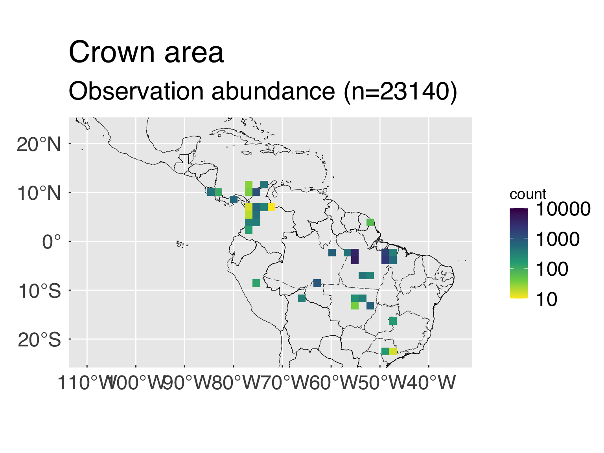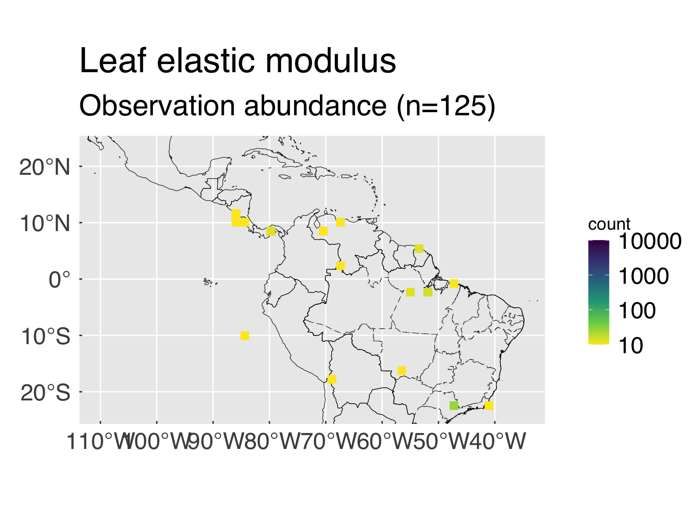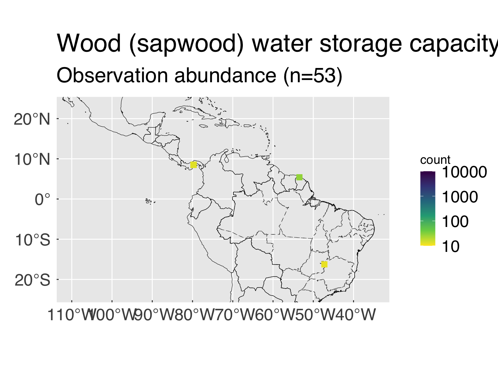
Violin plots
Here we plot violin diagrams segregated by multiple categorical
variables.
# Select reference data set for trade-off analysis
DataTRY = switch( EXPR = fit_taxon
, Individual = TidyTRY
, Species = SpeciesTRY
, Genus = GenusTRY
, stop("Invalid settings for variable \"fit_taxon\".")
)#end switch
# Select categories we are interested in plotting.
CategTraitID = sort(unique(CategExtra$TraitID))
CategTraitID = CategTraitID[CategTraitID %in% c(0L,try_trait$TraitID)]
CntCategList = length(CategTraitID)
# Loop through categorical traits and assign all individuals from the same species to the commonest class
gg_violin = list()
CategLoop = if(plot_violin){sequence(CntCategList)}else{sequence(0L)}
# Loop through the categories
for (w in CategLoop){
# Select categorical trait
CategIDNow = CategTraitID[w]
if (CategIDNow %in% 0L){
# Handy aliases
CategName = "Cluster"
CategDesc = "Trait-based clusters"
}else{
# Find settings from try_trait
z = match(CategIDNow,try_trait$TraitID)
if (! is.finite(z)) stop(paste0(" Unrecognised categorical trait ID: ",CategIDNow,"."))
# Handy aliases
CategName = try_trait$Name[z]
CategDesc = try_trait$Desc[z]
}#end if (CategIDNow %in% 0L)
cat0(" + Plot violin diagrams grouped by ",CategDesc," (",CategName,").")
# Select only the lines that are associated with this trait AND are not duplicated.
InfoNow = CategExtra %>%
filter(TraitID %in% CategIDNow) %>%
filter(! duplicated(Class))
CntInfoNow = nrow(InfoNow)
# Filter input data to exclude missing categories
ViolinTRY = DataTRY %>%
filter_at(vars(CategName), ~ ! is.na(.x)) %>%
mutate_at(vars(CategName), ~ factor(.x,levels=InfoNow$Class))
# Make sure there is anything to plot
IsPlot = which((try_trait$Type %in% "numeric") & (! try_trait$Allom) & (try_trait$Name %in% names(ViolinTRY)))
# Loop through all traits, and compare evergreens with drought deciduous.
for (tr in IsPlot){
# Select trait
TraitName = try_trait$Name [tr]
TraitDesc = try_trait$Desc [tr]
TraitUnit = try_trait$Unit [tr]
TraitTrans = try_trait$Trans[tr]
TraitTrans = switch( EXPR = try_trait$Trans[tr]
, log = "log10"
, neglog = "neglog10"
, try_trait$Trans[tr]
)#end switch
# Ensure that trait is numeric and has valid values for at least 2 categories.
TraitRange = ViolinTRY %>%
group_by_at(vars(CategName)) %>%
summarise_at(vars(TraitName), ~ range(.x,finite=TRUE)) %>%
ungroup()
TraitFine = ViolinTRY %>%
group_by_at(vars(CategName)) %>%
summarise_at(vars(TraitName), ~ sum(is.finite(.x)) %ge% n_violin_min) %>%
ungroup()
TraitPlot = sum(TraitFine[[TraitName]]) %ge% 2L
# Exclude data from categories with too few data points
CategIgnore = as.integer(TraitFine[[CategName]])[! TraitFine[[TraitName]]]
Discard = as.integer(ViolinTRY[[CategName]]) %in% CategIgnore
ViolinTRY[[TraitName]][Discard] = NA_real_
# We only plot this if this trait has anything to be plotted.
if (TraitPlot){
# Run Tukey's HSD test for phenological groups
TraitFormula = as.formula(paste0(TraitName," ~ ",CategName))
TraitAOV = aov(TraitFormula,data=ViolinTRY)
TraitGroup = HSD.test(TraitAOV,trt=CategName,group=TRUE)$groups
TraitOrder = InfoNow$Class[InfoNow$Class %in% rownames(TraitGroup)]
TraitGroup = TraitGroup[TraitOrder,,drop=FALSE]
# Set y axis range, apply an offset for Tukey's HSD tests
TraitYLim = range(TraitRange[[TraitName]],finite=TRUE)
TraitYLwr = TraitYLim[1L]
TraitYUpr = TraitYLim[2L]
if (TraitTrans %in% "identity"){
TraitYOff = 0.1 * (TraitYUpr - TraitYLwr)
TraitYUpr = TraitYUpr + TraitYOff
}else if (TraitTrans %in% "log10"){
TraitYLwr = log10(TraitYLwr)
TraitYUpr = log10(TraitYUpr)
TraitYOff = 0.1 * (TraitYUpr - TraitYLwr)
TraitYLwr = 10^TraitYLwr
TraitYUpr = 10^(TraitYUpr+TraitYOff)
}else if (TraitTrans %in% "neglog"){
TraitYLwr = -log10(-TraitYLwr)
TraitYUpr = -log10(-TraitYUpr)
TraitYOff = 0.1 * (TraitYUpr - TraitYLwr)
TraitYLwr = -10^(-TraitYLwr)
TraitYUpr = -10^(-TraitYUpr-TraitYOff)
}else if (TraitTrans %in% "sqrt"){
TraitYLwr = sqrt(TraitYLwr)
TraitYUpr = sqrt(TraitYUpr)
TraitYOff = 0.1 * (TraitYUpr - TraitYLwr)
TraitYLwr = TraitYLwr^2
TraitYUpr = (TraitYUpr+TraitYOff)^2
}else if (TraitTrans %in% "cbrt"){
TraitYLwr = cbrt(TraitYLwr)
TraitYUpr = cbrt(TraitYUpr)
TraitYOff = 0.1 * (TraitYUpr - TraitYLwr)
TraitYLwr = TraitYLwr^3
TraitYUpr = (TraitYUpr+TraitYOff)^3
}#end if (TraitTrans %in% "identity")
TraitYLim = c(TraitYLwr,TraitYUpr)
TraitTukey = tibble( x = match(rownames(TraitGroup),InfoNow$Class)
, y = rep(x=TraitYUpr,times=nrow(TraitGroup))
, labels = TraitGroup$groups
)#end tibble
# Create named vector for phenology classes: this is needed to ensure colours are consistent.
ViolinLabel = InfoNow$Class ; names(ViolinLabel ) = InfoNow$Class
ViolinColour = InfoNow$Colour; names(ViolinColour) = InfoNow$Class
# Add violins
gg_now = ggplot(data=ViolinTRY,aes_string(x=CategName,y=TraitName,fill=CategName))
gg_now = gg_now + scale_x_discrete(labels=ViolinLabel)
gg_now = gg_now + scale_y_continuous(limits=TraitYLim,trans=TraitTrans)
gg_now = gg_now + geom_violin(trim=TRUE,show.legend = FALSE,kernel="optcosine",n=2048L)
gg_now = gg_now + scale_fill_manual(values=ViolinColour)
gg_now = gg_now + geom_boxplot(width=0.05,fill="grey23",colour="white",outlier.shape=NA,show.legend = FALSE)
gg_now = gg_now + geom_text( data = TraitTukey
, mapping = aes(x=x,y=y,label=labels)
, hjust = 0.5
, vjust = 1
, family = "Helvetica"
, size = 0.5 * gg_ptsz
, inherit.aes = FALSE
)#end geom_text
gg_now = gg_now + ggtitle(TraitDesc)
gg_now = gg_now + xlab(element_blank())
gg_now = gg_now + ylab(desc.unit(desc=NULL,unit=untab[[TraitUnit]],twolines=FALSE))
gg_now = gg_now + theme_grey( base_size = gg_ptsz, base_family = "Helvetica",base_line_size = 0.5,base_rect_size =0.5)
gg_now = gg_now + theme( axis.text.x = element_text( size = gg_ptsz
, margin = unit(rep(0.10,times=4),"cm")
, angle = 30
, hjust = 1
, vjust = 1
)#end element_text
, axis.text.y = element_text( size = gg_ptsz
, margin = unit(rep(0.35,times=4),"cm")
)#end element_text
, axis.title.y = element_text( size = gg_ptsz)
, plot.title = element_text( size = gg_ptsz)
, axis.ticks.length = unit(-0.25,"cm")
)#end theme
# Save plots.
DeviceLoop = sequence(ndevice)
for (d in DeviceLoop){
h_output = paste0("Violin-",CategName,"-",TraitName,"-",base_suffix,".",gg_device[d])
dummy = ggsave( filename = h_output
, plot = gg_now
, device = gg_device[d]
, path = violin_path
, units = gg_units
, dpi = gg_square
, width = gg_square
, height = gg_height
)#end ggsave
}#end for (d in device_loop)
# Copy gg information to the list
gg_name = paste0(CategName,"_",TraitName)
gg_violin[[gg_name]] = gg_now
}#end if (t_plot)
}#end for (tr in sequence(n_trait))
}# for (z in sequence(CntCategList))
# If sought, plot images on screen
cnt_gg_violin = length(gg_violin)
if (gg_screen && (cnt_gg_violin %gt% 0L)){
gg_show = sort(sample.int(n=cnt_gg_violin,size=min(cnt_gg_violin,3L),replace=FALSE))
gg_violin[gg_show]
}#end if (gg_screen && (length(gg_violin) %gt% 0L))
Gap statistics and silhouette plots
Here we plot the gap statistics and silhouette plots, which are
helpful for defining the ideal number of clusters.
if (plot_stat_cluster){
cat0(" + Plot optimal cluster analysis diagrams.")
# Initialise list with GGPlots
gg_see = list()
# Create metrics for error plots
InfoPlot = ClusterInfo %>%
mutate( gap_lwr = gap - gapSE
, gap_upr = gap + gapSE
)#end mutate
# Retrieve the optimal number of clusters for each method.
k_opt_sil = length(ClusterOpt$sil$medoids)
k_opt_gap = length(ClusterOpt$gap$medoids)
InfoSil = InfoPlot %>%
filter(k==k_opt_sil) %>%
mutate(Label=paste0("k[O*p*t]==",k_opt_sil))
InfoGap = InfoPlot %>%
filter(k==k_opt_gap) %>%
mutate(Label=paste0("k[O*p*t]==",k_opt_gap))
# First, we plot the silhouette score
cat0(" - Silhouette score.")
gg_sil = ggplot(data=InfoPlot,aes(x=k,y=sil_width))
gg_sil = gg_sil + geom_line(colour="#3A6FB0",size=1.2)
gg_sil = gg_sil + geom_point(shape=16L,colour="#3A6FB0",size=2.0)
gg_sil = gg_sil + geom_point( data = InfoSil
, mapping = aes(x=k,y=sil_width)
, shape = 15L
, colour = "#C53F2D"
, size = 3.0
, inherit.aes = FALSE
)#end geom_point
gg_sil = gg_sil + geom_text( data = InfoSil
, mapping = aes(x=k,y=sil_width,label=Label)
, colour = "#C53F2D"
, hjust = -0.1
, vjust = 1.1
, family = "Helvetica"
, parse = TRUE
, size = 0.25 * gg_ptsz
, inherit.aes = FALSE
)#end geom_text
gg_sil = gg_sil + labs( title = "Silhouette analysis"
, subtitle = "Optimal number (red) is the maximum score"
, x = "Number of clusters"
, y = "Silhouette score"
)#end labs
gg_sil = gg_sil + theme_grey( base_size = gg_ptsz, base_family = "Helvetica",base_line_size = 0.5,base_rect_size =0.5)
gg_sil = gg_sil + theme( axis.text.x = element_text( size = gg_ptsz
, margin = unit(rep(0.35,times=4),"cm")
)#end element_text
, axis.text.y = element_text( size = gg_ptsz
, margin = unit(rep(0.35,times=4),"cm")
)#end element_text
, axis.title.y = element_text( size = gg_ptsz)
, plot.title = element_text( size = gg_ptsz)
, plot.subtitle = element_text( size = 0.7*gg_ptsz)
, axis.ticks.length = unit(-0.25,"cm")
)#end theme
# Copy the plot to the list
gg_see$sil = gg_sil
# Save plot in every format requested.
for (d in sequence(ndevice)){
f_output = paste0("Silhouette_",base_suffix,".",gg_device[d])
dummy = ggsave( filename = f_output
, plot = gg_sil
, device = gg_device[d]
, path = trpca_path
, width = gg_width
, height = gg_height
, units = gg_units
, dpi = gg_depth
)#end ggsave
}#end for (o in sequence(nout))
# First, we plot the gap statistics
cat0(" - Gap statistics.")
gg_gap = ggplot(data=InfoPlot,aes(x=k,y=gap,ymin=gap_lwr,ymax=gap_upr))
gg_gap = gg_gap + geom_line(colour="#3A6FB0",size=0.75)
gg_gap = gg_gap + geom_point(shape=16L,colour="#3A6FB0",size=2.0)
gg_gap = gg_gap + geom_errorbar(colour="#3A6FB0",linewidth=0.75,width=1./6.)
gg_gap = gg_gap + geom_point( data = InfoGap
, mapping = aes(x=k,y=gap)
, shape = 15L
, colour = "#C53F2D"
, size = 3.0
, inherit.aes = FALSE
)#end geom_point
gg_gap = gg_gap + geom_errorbar( data = InfoGap
, mapping = aes(x=k,ymin=gap_lwr,ymax=gap_upr)
, colour = "#C53F2D"
, linewidth = 0.75
, width = 1./6.
, inherit.aes = FALSE
)#end geom_point
gg_gap = gg_gap + geom_text( data = InfoGap
, mapping = aes(x=k,y=gap,label=Label)
, colour = "#C53F2D"
, hjust = -0.1
, vjust = -0.1
, family = "Helvetica"
, parse = TRUE
, size = 0.25 * gg_ptsz
, inherit.aes = FALSE
)#end geom_text
gg_gap = gg_gap + labs( title = "Gap analysis"
, subtitle = "Optimal number (red) based on first maximum above SE"
, x = "Number of clusters"
, y = "Gap Statistic"
)#end labs
gg_gap = gg_gap + theme_grey( base_size = gg_ptsz, base_family = "Helvetica",base_line_size = 0.5,base_rect_size =0.5)
gg_gap = gg_gap + theme( axis.text.x = element_text( size = gg_ptsz
, margin = unit(rep(0.35,times=4),"cm")
)#end element_text
, axis.text.y = element_text( size = gg_ptsz
, margin = unit(rep(0.35,times=4),"cm")
)#end element_text
, axis.title.y = element_text( size = gg_ptsz)
, plot.title = element_text( size = gg_ptsz)
, plot.subtitle = element_text( size = 0.7*gg_ptsz)
, axis.ticks.length = unit(-0.25,"cm")
)#end theme
# Copy the plot to the list
gg_see$gap = gg_gap
# Save plot in every format requested.
for (d in sequence(ndevice)){
f_output = paste0("GapStatistic",base_suffix,".",gg_device[d])
dummy = ggsave( filename = f_output
, plot = gg_gap
, device = gg_device[d]
, path = trpca_path
, width = gg_square
, height = gg_square
, units = gg_units
, dpi = gg_depth
)#end ggsave
}#end for (o in sequence(nout))
if (gg_screen) gg_see
}#end if (plot_stat_cluster)
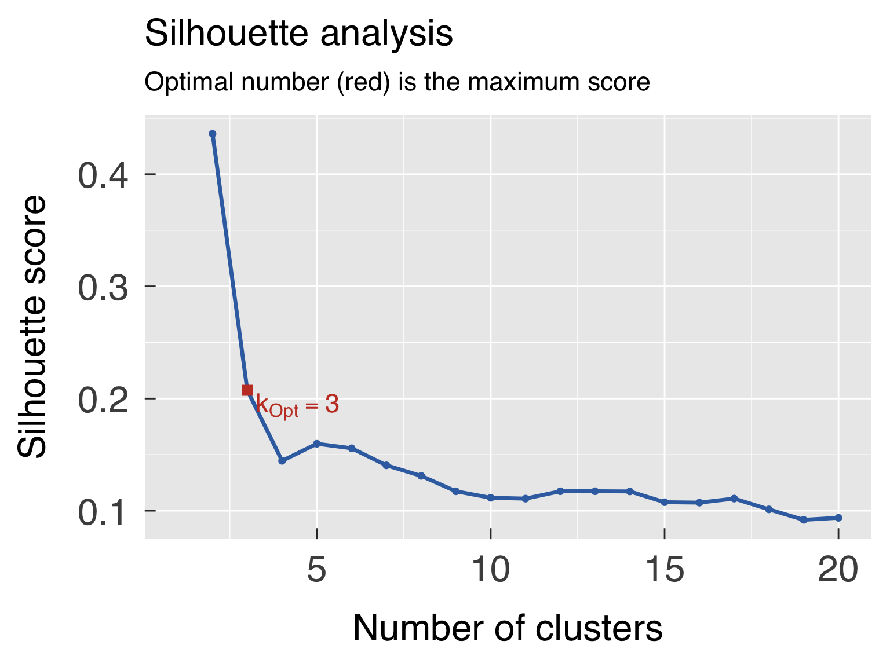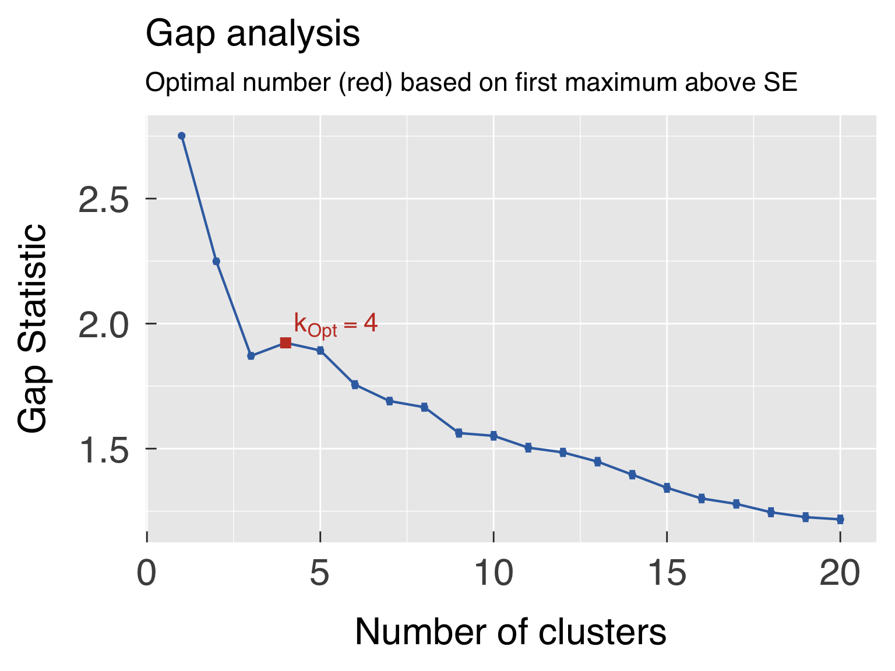
Weighting factors for cluster analysis
Here we plot the gap statistics and silhouette plots, which are
helpful for defining the ideal number of clusters.
if (plot_wgt_cluster){
cat0(" + Plot weighting factors for cluster analysis.")
# Arrange data set for showing weights
WeightTRY = DataInfo %>%
arrange(Weight) %>%
mutate( TraitID = try_trait$TraitID[match(Name,try_trait$Name)]
, Desc = try_trait$Desc[match(Name,try_trait$Name)]
, Desc = ifelse(test = Name %in% "ScientificName" ,yes="Species",no=Desc)
, Desc = ifelse(test = Name %in% "Genus" ,yes="Genus",no=Desc)
, Desc = ifelse(test = Name %in% "Family" ,yes="Family",no=Desc)
, Desc = ifelse(test = Name %in% "Order" ,yes="Order (Taxonomy)" ,no=Desc)
, Desc = ifelse(test = Name %in% "Class" ,yes="Class (Taxonomy)" ,no=Desc)
, Desc = ifelse(test = Name %in% "Phylum" ,yes="Phylum" ,no=Desc)
, Desc = factor(Desc,levels=Desc)
, Type = ifelse(test = Type %in% c("factor" ), yes = "categorical", no = Type)
, Type = ifelse(test = Type %in% c("character"), yes = "categorical", no = Type)
, Type = ifelse(test = Type %in% c("integer" ), yes = "ordered" , no = Type)
, Type = str_to_sentence(Type)
, Type = factor(Type,levels=sort(unique(Type))))
CntTypes = nlevels(WeightTRY$Type)
colTypes = RColorBrewer::brewer.pal(n=max(3L,CntTypes),name="Paired")[sequence(CntTypes)]
names(colTypes) = levels(WeightTRY$Type)
# First, we plot the gap statistics
gg_wgt = ggplot(data=WeightTRY,aes(x=Weight,y=Desc,colour=Type,fill=Type))
gg_wgt = gg_wgt + geom_col(width=0.8)
gg_wgt = gg_wgt + scale_fill_manual(values=colTypes)
gg_wgt = gg_wgt + scale_colour_manual(values=colTypes)
gg_wgt = gg_wgt + labs( title = "Dissimilarity matrix weights"
, subtitle = "Weigths relative to maximum"
, x = element_blank()
, y = element_blank()
)#end labs
gg_wgt = gg_wgt + theme_grey( base_size = gg_ptsz, base_family = "Helvetica",base_line_size = 0.5,base_rect_size =0.5)
gg_wgt = gg_wgt + theme( axis.text.x = element_text( size = gg_ptsz
, margin = unit(rep(0.35,times=4),"cm")
)#end element_text
, axis.text.y = element_text( size = 0.7*gg_ptsz
, margin = unit(rep(0.35,times=4),"cm")
)#end element_text
, axis.title.y = element_text( size = 0.8*gg_ptsz)
, plot.title = element_text( size = 0.8*gg_ptsz)
, plot.subtitle = element_text( size = 0.6*gg_ptsz)
, axis.ticks.length = unit(-0.25,"cm")
, legend.position = "bottom"
, legend.direction = "horizontal"
)#end theme
# Save plot in every format requested.
for (d in sequence(ndevice)){
f_output = paste0("WeightCluster",base_suffix,".",gg_device[d])
dummy = ggsave( filename = f_output
, plot = gg_wgt
, device = gg_device[d]
, path = trpca_path
, width = gg_square
, height = gg_square
, units = gg_units
, dpi = gg_depth
)#end ggsave
}#end for (o in sequence(nout))
if (gg_screen) gg_wgt
}#end if (plot_wgt_cluster)
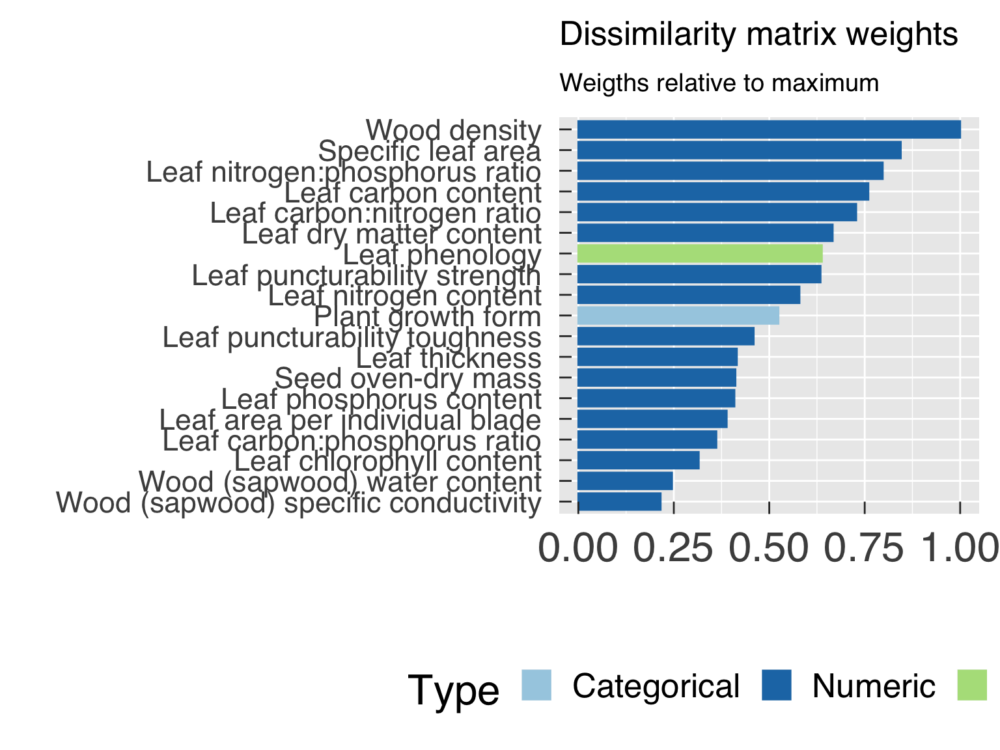
Principal component analysis with numeric traits
Here we run a principal component analysis (PCA) with the traits that
are numeric. PCA requires complete data sets, so we must run an
imputation approach first. Mind that imputation works best when only a
small fraction of the data points is missing. It is very unlikely that
this assumption will hold valid at regional or global scale in the
tropics.
cat0(" + Run the principal component analysis.")
selTrait = (try_trait$Type %in% "numeric") & try_trait$Cluster & (try_trait$Name %in% names(ClusterTRY))
TraitUse = names(ClusterTRY)[names(ClusterTRY) %in% try_trait$Name[selTrait]]
TraitSkip = names(ClusterTRY)[! names(ClusterTRY) %in% TraitUse]
WhichUse = match(TraitUse,try_trait$Name)
DataUse = ClusterTRY %>% select_at(all_of(TraitUse ))
DataSkip = ClusterTRY %>% select_at(all_of(TraitSkip))
# Find the number of sub-classes to test the model
CategPCA = CategInfo %>%
filter((XYUse %in% "Colour") & (! duplicated(Class)))
CntCategPCA = nrow(CategPCA)+1L
# Transform variables ahead of the PCA
cat0(" - Transform variables prior to running the PCA.")
for (v in WhichUse){
# Handy aliases
vName = try_trait$Name [v]
vDesc = try_trait$Desc [v]
z = which(GlobDistr$x %in% vName)
zDistr = GlobDistr$Distrib[z]
zFirst = GlobDistr$First [z]
zSecond = GlobDistr$Second [z]
zThird = GlobDistr$Third [z]
# Pick cumulative distribution function according to the distribution.
zFun = switch( zDistr
, "uniform" = punif
, "normal" = pnorm
, "logistic" = plogis
, "skew-normal" = sn::psn
, "log-normal" = plnorm
, "neglog-normal" = pnlnorm
, "weibull" = pweibull
, "gamma" = pgamma
, NA_character_
)#end switch
# Decide whether the distribution needs two or three parameters
if (zDistr %in% "skew-normal"){
p_vName = zFun(ClusterTRY[[vName]],zFirst,zSecond,zThird)
}else if (! is.na(zDistr)){
p_vName = zFun(ClusterTRY[[vName]],zFirst,zSecond)
}#end if (zDistr %in% "skew-normal")
# Find the normal distribution equivalent of the value
DataUse[[vName]] = qnorm(p=p_vName,mean=0.,sd=1.)
DataUse[[vName]] = ifelse( test = is.finite(DataUse[[vName]])
, yes = DataUse[[vName]]
, no = NA_real_
)#end ifelse
}#end for (z in WhichUse)
# Select data with a sufficient number of data sets
SampUse = DataUse %>%
summarise(across(everything(), ~ sum(is.finite(.x))))
SdevUse = DataUse %>%
summarise(across(everything(), ~ sd(.x,na.rm=TRUE)))
SampUse = names(SampUse)[SampUse %ge% n_pca_min]
SdevUse = names(SdevUse)[SdevUse %ge% 0. ]
KeepUse = intersect(SampUse,SdevUse)
# Keep columns with data
DataUse = DataUse %>%
select_at(vars(KeepUse))
# Remove rows without valid data
ValidUse = apply(X=DataUse,MARGIN=1,FUN=function(x) all(is.finite(x)))
DataUse = DataUse [ValidUse,,drop=FALSE]
DataSkip = DataSkip[ValidUse,,drop=FALSE]
# Run principal component analysis
DataPCA = DataUse %>%
scale() %>%
prcomp()
# Expand the imputed data to include categorical variables
DataUse = as_tibble(cbind(DataUse,DataSkip))
# Decide whether to plot
pca_cluster_loop = if(plot_pca_cluster){sequence(4L)}else{sequence(0L)}
gg_pca = list()
for (cc in pca_cluster_loop){
# Set categories for the PCA points
zTrait = unique(CategPCA$TraitID[! is.na(CategPCA$TraitID)])
z = match(zTrait,try_trait$TraitID)
zName = try_trait$Name [z]
zDesc = try_trait$Desc [z]
zUniq = CategPCA$Class
zSize = length(zUniq)
pchClasses = CategPCA$Symbol
names(pchClasses) = CategPCA$Class
if (cc %in% 1L){
# Use categories for colours as well
cName = zName
cDesc = zDesc
cUniq = zUniq
cSize = zSize
colClasses = CategPCA$Colour
names(colClasses) = CategPCA$Class
}else{
# Use clusters
cType = c("gap","sil","fix")[cc-1L]
cName = paste0("cluster_",cType)
cDesc = paste0("Clustered PFT: ",c("Gap statistic","Silhouette","Fixed"))[cc-1L]
if ( ( cType == cluster_method ) && ( "CategCluster" %in% ls(envir=.GlobalEnv) ) ){
DataUse[[cName]] = factor(x=as.character(DataUse[[cName]]),levels=CategCluster$TRYClass)
cUniq = CategCluster$TRYClass
cSize = nrow(CategCluster)
colClasses = CategCluster$Colour
names(colClasses) = CategCluster$TRYClass
}else{
cUniq = levels(DataUse[[cName]])
cSize = nlevels(DataUse[[cName]])
cPalette = if(cSize %gt% 6L){"Paired"}else{"Dark2"}
colClasses = RColorBrewer::brewer.pal(n=cSize,name=cPalette)
names(colClasses) = cUniq
}#end if ( ( cType == cluster_method ) && ( "CategCluster" %in% ls(envir=.GlobalEnv) ) )
}#end if (cc %in% 1L)
zTitle = paste0("PCA points by ",tolower(cDesc))
# Set the PCA plot
gg_now = autoplot( object = DataPCA
, data = DataUse
, colour = cName
, shape = zName
, size = 1.0
, loadings = TRUE
, loadings.colour = "grey40"
, loadings.label = c(FALSE,TRUE)[2L]
, loadings.label.size = 4
, loadings.label.colour = "black"
, loadings.label.family = "Helvetica"
)#end autoplot
gg_now = gg_now + scale_colour_manual (values=colClasses,name=NULL)
gg_now = gg_now + scale_shape_manual (values=pchClasses,name=NULL)
gg_now = gg_now + labs( title = zTitle, subtitle = LabelSubtitle)
gg_now = gg_now + theme_grey( base_size = gg_ptsz, base_family = "Helvetica",base_line_size = 0.5,base_rect_size =0.5)
gg_now = gg_now + theme( axis.text.x = element_text( size = gg_ptsz, margin = unit(rep(0.35,times=4),"cm"))
, axis.text.y = element_text( size = gg_ptsz, margin = unit(rep(0.35,times=4),"cm"))
, plot.title = element_text( size = gg_ptsz)
, plot.subtitle = element_text( size = 0.7*gg_ptsz)
, axis.ticks.length = unit(-0.25,"cm")
, legend.position = "bottom"
, legend.direction = "horizontal"
)#end theme
gg_now = gg_now + guides(colour=guide_legend(nrow=cSize),shape=guide_legend(nrow=zSize))
# Save plot in every format requested.
for (d in sequence(ndevice)){
f_output = paste0("PCAPlot_",cName,"_",base_suffix,".",gg_device[d])
dummy = ggsave( filename = f_output
, plot = gg_now
, device = gg_device[d]
, path = trpca_path
, width = gg_square
, height = gg_square
, units = gg_units
, dpi = gg_depth
)#end ggsave
}#end for (o in sequence(nout))
# Append plot to the list
gg_pca[[cName]] = gg_now
}#end for (cc in sequence(4L))
# Show plots
if (length(gg_pca) %gt% 0L & gg_screen) gg_pca
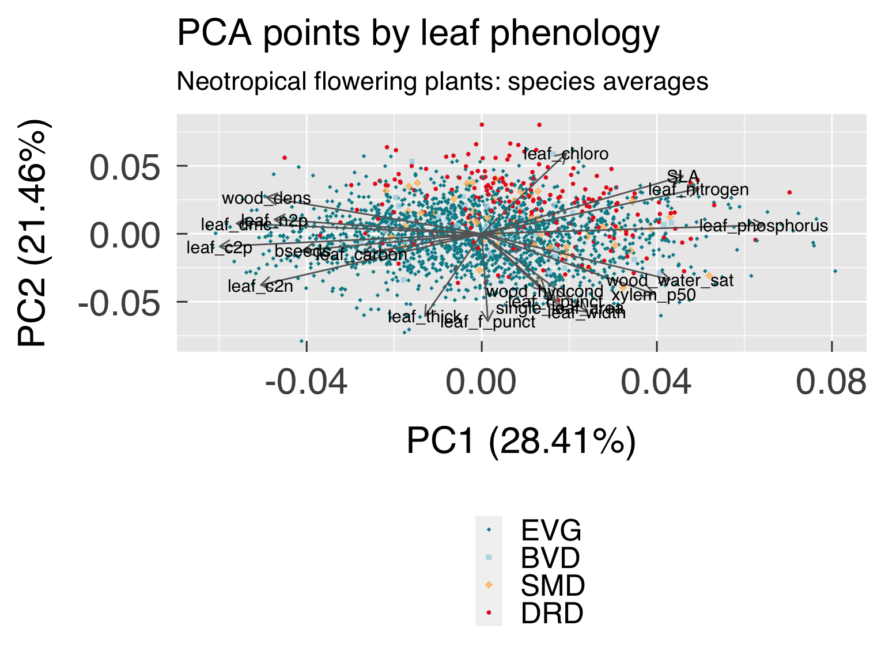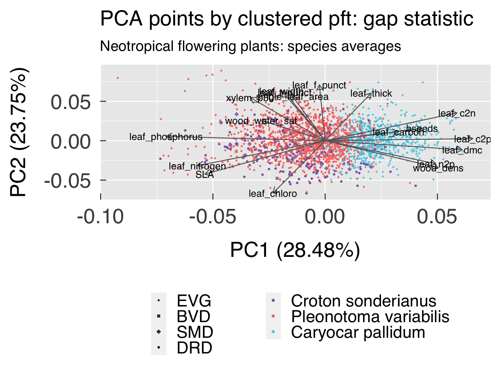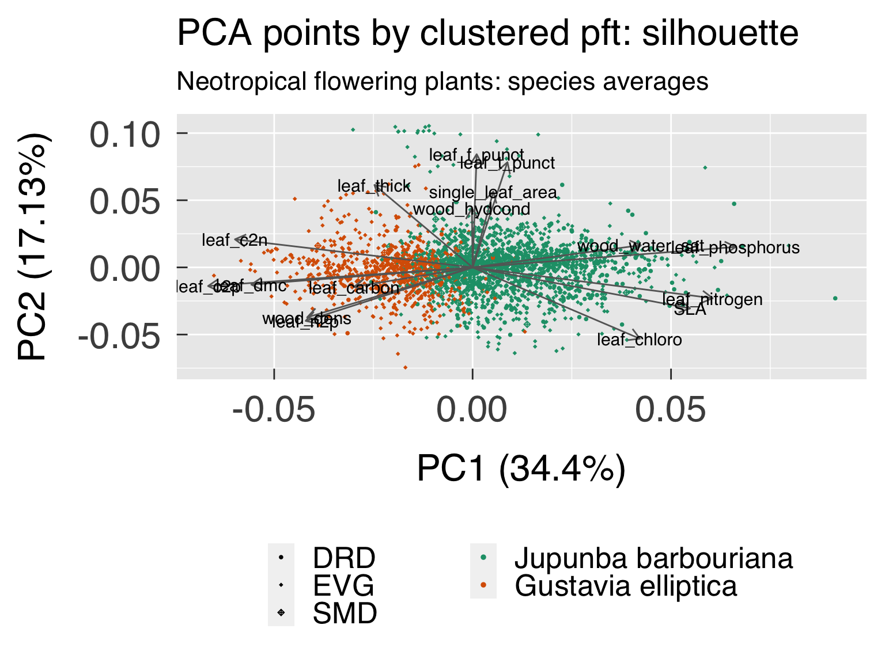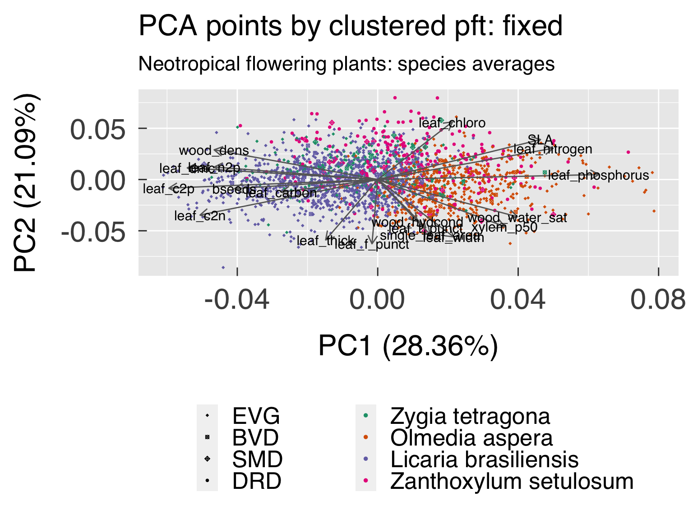
Plot the medoid of all variables used in the cluster analysis
Here we plot the medoid of each cluster for all traits included as a
radial plot, which is obtained by finding the equivalent value of the
CDF for each trait.
if (plot_radar_cluster){
cat0(" + Plot radar plot for medoids.")
# Retrieve medoid values and select traits that are numeric and have a global distribution.
HasDistrib = names(MedoidTRY)[names(MedoidTRY) %in% GlobDistr$x ]
IsTrait = names(MedoidTRY)[names(MedoidTRY) %in% try_trait$Name]
NormalLoop = sort(intersect(HasDistrib,IsTrait))
KeepMedoid = unique(c("Cluster",NormalLoop))
RadarTRY = MedoidTRY %>%
select(all_of(KeepMedoid))
# Loop through the numeric variables and find the CDF.
for (v in seq_along(NormalLoop)){
# Retrieve information for this variable
vName = NormalLoop[v]
vIndex = match(vName,GlobDistr$x)
vDistr = GlobDistr$Distrib[vIndex]
vFirst = GlobDistr$First [vIndex]
vSecond = GlobDistr$Second [vIndex]
vThird = GlobDistr$Third [vIndex]
# Fit the cumulative density function according to the distribution.
vFun = switch( vDistr
, "uniform" = punif
, "normal" = pnorm
, "logistic" = plogis
, "skew-normal" = sn::psn
, "log-normal" = plnorm
, "neglog-normal" = pnlnorm
, "weibull" = pweibull
, "gamma" = pgamma
, NA_character_
)#end switch
# Decide whether the distribution needs two or three parameters
if (vDistr %in% "skew-normal"){
RadarTRY[[vName]] = vFun(RadarTRY[[vName]],vFirst,vSecond,vThird)
}else if (! is.na(zDistr)){
RadarTRY[[vName]] = vFun(RadarTRY[[vName]],vFirst,vSecond)
}#end if (zDistr %in% "skew-normal")
# Delete NaN values
RadarTRY[[vName]] = ifelse( test = is.finite(RadarTRY[[vName]])
, yes = RadarTRY[[vName]]
, no = NA_real_
)#end ifelse
}#end for (v in seq_along(NormalLoop))
# Create a table abbreviations
NormalAbbr = letters[seq_along(NormalLoop)]
names(NormalAbbr) = NormalLoop
# List of classes for ordering the clusters. We add "All" as a dummy cluster
CategUse = CategExtra %>% filter((TraitID %in% 0) | (Class %in% "ALL"))
orderCateg = c(nrow(CategUse),sequence(nrow(CategUse)-1L))
CategUse = CategUse[orderCateg,]
# Append a column with all, which will be used as a legend
AppendTRY = RadarTRY[1L,,drop=FALSE] %>%
mutate( across(where(is.numeric), ~ NA_real_ * .x)
, Cluster = CategUse$Class[1L])
RadarTRY = rbind(AppendTRY,RadarTRY)
# Reshape RadarTRY so the variables become a categorical variable
RadarPlot = RadarTRY %>%
pivot_longer(all_of(NormalLoop),names_to="Variable",values_to="CumDistr") %>%
mutate( Cluster = factor(x=Cluster,levels=CategUse$Class)
, Variable = factor(x=Variable,levels=NormalLoop,labels=NormalAbbr) )
gg_radar = ggplot( data = RadarPlot, mapping = aes(x=Variable,y=CumDistr,group=Cluster) )
gg_radar = gg_radar + facet_wrap( ~Cluster, nrow=2L)
gg_radar = gg_radar + geom_polygon(colour="#1F78B4",fill="#A6CEE3",alpha=0.7,linewidth=I(1.2))
gg_radar = gg_radar + geom_hline(yintercept=c(0.25,0.5,0.75),colour="black",linetype="dotted",linewidth=I(0.3))
gg_radar = gg_radar + geom_hline(yintercept=c(1.0),colour="black",linetype="solid",linewidth=I(0.3))
gg_radar = gg_radar + scale_y_continuous(limits=c(0.,1.0),breaks=c(0.,0.25,0.5,0.75,1.0))
gg_radar = gg_radar + coord_curvedpolar()
gg_radar = gg_radar + labs( x = element_blank()
, y = element_blank()
, title = "Relative traits for the cluster medoids"
, subtitle = LabelSubtitle
)#end labs
gg_radar = gg_radar + theme_grey( base_size = gg_ptsz, base_family = "Helvetica",base_line_size = 0.5,base_rect_size =0.5)
gg_radar = gg_radar + theme( axis.text.x = element_text( size = gg_ptsz, margin = unit(rep(0.35,times=4),"cm"))
, axis.text.y = element_blank()
, axis.ticks.y = element_blank()
, plot.title = element_text( size = gg_ptsz)
, plot.subtitle = element_text( size = 0.7*gg_ptsz)
, axis.ticks.length = unit(-0.25,"cm")
, legend.position = "bottom"
, legend.direction = "horizontal"
)#end theme
# Save plot in every format requested.
for (d in sequence(ndevice)){
f_output = paste0("RadarPlot_Faceted_",base_suffix,".",gg_device[d])
dummy = ggsave( filename = f_output
, plot = gg_radar
, device = gg_device[d]
, path = trpca_path
, width = gg_width
, height = gg_height
, units = gg_units
, dpi = gg_depth
)#end ggsave
}#end for (o in sequence(nout))
# If sought, plot images on screen
if (gg_screen) gg_radar
}#end if (plot_radar_cluster)
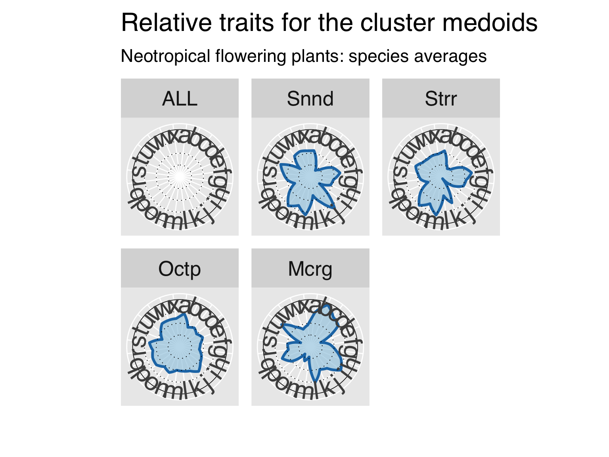
Plot trait trade-off relationships
In this part, we plot the standardised major axis fit for all trait
pairs, accounting for trait variation flagged as “colour”, in addition
to the trade-offs distinguished by data-based clusters.
# Select reference data set for trade-off analysis
DataTRY = switch( EXPR = fit_taxon
, Individual = TidyTRY
, Species = SpeciesTRY
, Genus = GenusTRY
, stop("Invalid settings for variable \"fit_taxon\".")
)#end switch
# Load settings for the x axis.
x = xsma_idx
xTrait = try_trait$TraitID[x]
xName = try_trait$Name [x]
xDesc = try_trait$Desc [x]
xUnit = try_trait$Unit [x]
xTrans = try_trait$Trans [x]
xTPlot = switch( EXPR = xTrans, log = "log10", neglog="neglog10",xTrans)
# Select valid data for the y axis
xSel = switch( EXPR = xTrans
, identity = is.finite(DataTRY[[xName]])
, log = DataTRY[[xName]] %gt% 0.
, neglog = DataTRY[[xName]] %lt% 0.
, sqrt = DataTRY[[xName]] %ge% 0.
, cbrt = is.finite(DataTRY[[xName]])
, stop(paste0(" Invalid transformation for trait ",xName," (TraitID = ",xTrait,")."))
)#end switch
# Find out how many SMA fits we will seek
yPlotSMA = which(try_trait$SMA & (! (try_trait$Name %in% xName)))
CntSMA = length(yPlotSMA)
# Initialise the list of plots
gg_SMA = list()
# Find the number of traits for plotting the model
CategSel = is.finite(CategSMA$TraitID) & plot_sma_trait
CategTrait = sort(unique(CategSMA$TraitID[CategSel]))
for (ct in seq_along(CategTrait)){
# Load settings for the classes.
zTrait = CategTrait[ct]
if (zTrait %in% 0L){
zName = "Cluster"
zDesc = "Data-based cluster class"
}else{
z = match(zTrait,try_trait$TraitID)
zName = try_trait$Name [z]
zDesc = try_trait$Desc [z]
}#end if (zTrait %in% 0L)
zTitle = paste0("SMA model by ",tolower(zDesc))
# Set path for this group of plots.
categ_trsma_path = file.path(trsma_path,zName)
# Select categories for this trait type.
CategNow = CategExtra %>%
filter( (TraitID %in% zTrait) | is.na(TraitID)) %>%
filter((! duplicated(Class)))
CntCategNow = nrow(CategNow)
# Loop through the SMA variables
for (y in sequence(CntSMA)){
# Load settings for the y axis.
yIndex = yPlotSMA[y]
yTrait = try_trait$TraitID[yIndex]
yName = try_trait$Name [yIndex]
yLower = paste0(yName,"_Lower")
yUpper = paste0(yName,"_Upper")
yDesc = try_trait$Desc [yIndex]
yUnit = try_trait$Unit [yIndex]
yTrans = try_trait$Trans [yIndex]
yTPlot = switch( EXPR = yTrans, log = "log10", neglog="neglog10",yTrans)
# Select valid data for the y axis
ySel = switch( EXPR = yTrans
, identity = is.finite(DataTRY[[yName]])
, log = DataTRY[[yName]] %gt% 0.
, neglog = DataTRY[[yName]] %lt% 0.
, sqrt = DataTRY[[yName]] %ge% 0.
, cbrt = is.finite(DataTRY[[yName]])
, stop(paste0(" Invalid transformation for trait ",yName," (TraitID = ",yTrait,")."))
)#end switch
# Subset data
DataPlot = DataTRY %>%
filter(xSel & ySel) %>%
select_at(vars(c(xName,yName,zName))) %>%
mutate_at( vars(c(zName)), ~ifelse(.x %in% CategNow$Class,.x,"UKN")) %>%
mutate_at( vars(c(zName)), ~factor(.x,levels=CategNow$Class))
PlotSMA = nrow(DataPlot) %ge% n_fit_min
# Append dummy data with category ALL so legends can be merged.
DataDummy = DataPlot[rep(1L,times=CntCategNow),,drop=FALSE] %>%
mutate(across(c(xName,yName), ~ c(NA_real_))) %>%
mutate(across(c(zName), ~ factor(CategNow$Class,levels=CategNow$Class) ) )
DataPlot = rbind(DataPlot,DataDummy)
CntDataPlot = nrow(DataPlot)
# Plot only the variables with meaningful data
if (PlotSMA){
cat0(" + Plot the trait trade-offs (and SMA fits) for ",yDesc,", by ",zDesc,".")
# Set path for this group of plots.
dummy = dir.create(categ_trsma_path,recursive=TRUE,showWarnings=FALSE)
# Find limits for plots.
xLimit = range(DataPlot[[xName]],finite=TRUE)
yLimit = range(DataPlot[[yName]],finite=TRUE)
# Subset predicted data, so the range is consistent with the subset data:
pSel = ( ( (PredSMA[[xName]] %wr% xLimit) | is.na(PredSMA[[xName]]) )
& ( (PredSMA[[yName]] %wr% yLimit) | is.na(PredSMA[[yName]]) )
& (PredSMA$TraitClass %in% c("All","Unknown",zName)) )
PredPlot = PredSMA %>%
filter(pSel) %>%
mutate(Class = factor(Class,levels = CategNow$Class)) %>%
rename_at( vars(c("Class")), ~ c(zName)) %>%
select_at(vars(c(xName,yName,zName)))
PlotFit = any(is.finite(PredPlot[[yName]]))
# Subset SMA summary
InfoPlot = InfoSMA %>%
filter( (x %in% xName) & (y %in% yName) & ( TraitClass %in% c("All",zName) ) ) %>%
select( ! TraitClass) %>%
rename_at( vars(c("Class")), ~ c(zName)) %>%
add_row("{zName}" := "UKN") %>%
mutate( across(c(zName), ~ factor(.x,levels = CategNow$Class))) %>%
mutate( across(c("x","y","xTrans","yTrans"), ~ ifelse(test=is.na(.x),yes=commonest(.x,na.rm=TRUE),no=.x))
, N = ifelse(test=is.na(N),yes=0L,no=N)
, Line = cut(pValue,breaks=c(0,0.001,0.01,0.05,0.10,1),labels=FALSE)
, Line = ifelse( test = is.na(Line)
, yes = "blank"
, no = c("solid","dotdash","dashed","dotted","blank")[Line]
)#end ifelse
)#end mutate
# Set categories for colours, lines and symbols
colClasses = CategNow$Colour
names(colClasses) = CategNow$Class
pchClasses = CategNow$Symbol
names(pchClasses) = CategNow$Class
ltyClasses = InfoPlot$Line
names(ltyClasses) = InfoPlot[[zName]]
ltyClasses = ltyClasses[match(names(pchClasses),names(ltyClasses))]
# Build the plot
gg_now = ggplot()
gg_now = gg_now + geom_point(data=DataPlot,aes_string(x=xName,y=yName,colour=zName,shape=zName),size=1.9)
gg_now = gg_now + scale_colour_manual (values=colClasses)
gg_now = gg_now + scale_shape_manual (values=pchClasses)
if (PlotFit){
#gg_now = gg_now + geom_ribbon(data=PredPlot,aes_string(x=xName,ymin=yLower,ymax=yUpper,fill=zName),alpha=0.35,colour="transparent")
gg_now = gg_now + scale_fill_manual(values=colClasses)
gg_now = gg_now + geom_line(data=PredPlot,aes_string(x=xName,y=yName,colour=zName,linetype=zName),size=1.25,inherit.aes = FALSE)
gg_now = gg_now + scale_linetype_manual(values=ltyClasses)
gg_now = gg_now + labs( x = desc.unit(desc=xDesc,unit=untab[[xUnit]])
, y = desc.unit(desc=yDesc,unit=untab[[yUnit]])
, colour = element_blank()
, fill = element_blank()
, shape = element_blank()
, linetype = element_blank()
, title = zTitle
, subtitle = LabelSubtitle
)#end labs
}else{
gg_now = gg_now + labs( x = desc.unit(desc=xDesc,unit=untab[[xUnit]])
, y = desc.unit(desc=yDesc,unit=untab[[yUnit]])
, colour = element_blank()
, shape = element_blank()
, title = zTitle
, subtitle = LabelSubtitle
)#end labs
}#end if (PlotFit)
gg_now = gg_now + theme_grey( base_size = gg_ptsz, base_family = "Helvetica",base_line_size = 0.5,base_rect_size =0.5)
gg_now = gg_now + theme( axis.text.x = element_text( size = gg_ptsz, margin = unit(rep(0.35,times=4),"cm"))
, axis.text.y = element_text( size = gg_ptsz, margin = unit(rep(0.35,times=4),"cm"))
, plot.title = element_text( size = gg_ptsz)
, plot.subtitle = element_text( size = 0.7*gg_ptsz)
, axis.ticks.length = unit(-0.25,"cm")
, legend.position = "bottom"
, legend.direction = "horizontal"
)#end theme
gg_now = gg_now + scale_x_continuous(trans=xTPlot,limits=xLimit)
gg_now = gg_now + scale_y_continuous(trans=yTPlot,limits=yLimit)
# gg_now = gg_now + coord_trans(x=xTPlot,y=yTPlot,xlim=xLimit,ylim=yLimit)
# Save plot in every format requested.
for (d in sequence(ndevice)){
f_output = paste0("SMAPlot_",yName,"_by-",zName,"_",trait_suffix,".",gg_device[d])
dummy = ggsave( filename = f_output
, plot = gg_now
, device = gg_device[d]
, path = categ_trsma_path
, width = gg_square
, height = gg_square
, units = gg_units
, dpi = gg_depth
)#end ggsave
}#end for (o in sequence(nout))
# Write plot settings to the list.
yzName = paste0(yName,"_",zName)
gg_SMA[[yzName]] = gg_now
}else{
cat0(" + Skip plot for ",yDesc," by ",zDesc,": too few valid points.")
}#end if (PlotSMA)
}#end for (y in yloop)
}#end for (z in seq_along(CategTrait))
# If sought, plot images on screen
cnt_gg_SMA = length(gg_SMA)
if (gg_screen && (cnt_gg_SMA %gt% 0L)){
gg_show = sort(sample.int(n=cnt_gg_SMA,size=min(cnt_gg_SMA,3L),replace=FALSE))
gg_SMA[gg_show]
}#end if (gg_screen && (length(gg_SMA) %gt% 0L))
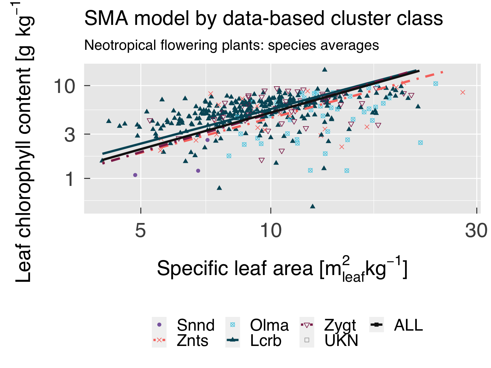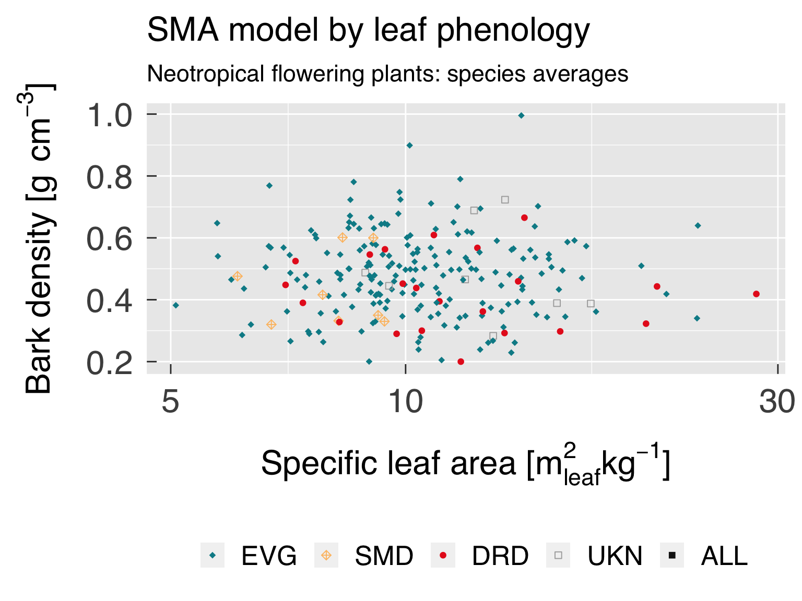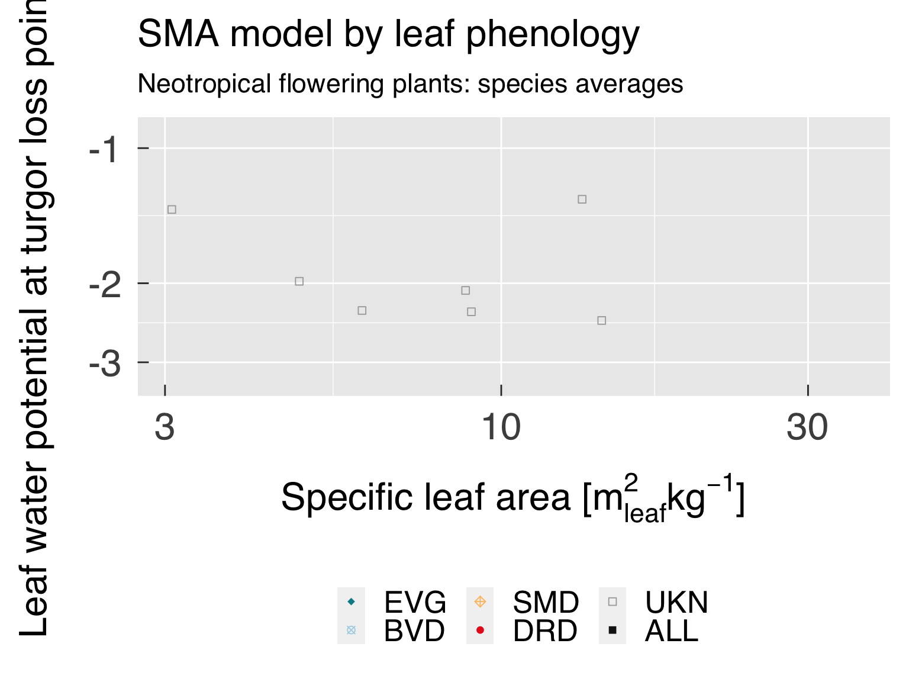
And in this block, we do the same for the photosynthetic traits.
# Select reference data set for trade-off analysis
DataTRY = switch( EXPR = fit_taxon
, Individual = TidyTRY
, Species = SpeciesTRY
, Genus = GenusTRY
, stop("Invalid settings for variable \"fit_taxon\".")
)#end switch
# Load settings for the x axis.
x = xphoto_idx
xTrait = try_trait$TraitID[x]
xName = try_trait$Name [x]
xDesc = try_trait$Desc [x]
xUnit = try_trait$Unit [x]
xTrans = try_trait$Trans [x]
xTPlot = switch( EXPR = xTrans, log = "log10", neglog="neglog10",xTrans)
# Select valid data for the y axis
xSel = switch( EXPR = xTrans
, identity = is.finite(DataTRY[[xName]])
, log = DataTRY[[xName]] %gt% 0.
, neglog = DataTRY[[xName]] %lt% 0.
, sqrt = DataTRY[[xName]] %ge% 0.
, cbrt = is.finite(DataTRY[[xName]])
, stop(paste0(" Invalid transformation for trait ",xName," (TraitID = ",xTrait,")."))
)#end switch
# Find out how many SMA (Photosynthesis) fits we will seek
yPlotPhoto = which(try_trait$SMA & try_trait$Photo & (! (try_trait$Name %in% xName)))
CntPhoto = length(yPlotPhoto)
# Initialise the list of plots
gg_Photo = list()
# Find the number of traits for plotting the model
CategSel = is.finite(CategPhoto$TraitID) & plot_sma_photo
CategTrait = sort(unique(CategPhoto$TraitID[CategSel]))
for (ct in seq_along(CategTrait)){
# Load settings for the classes.
zTrait = CategTrait[ct]
if (zTrait %in% 0L){
zName = "Cluster"
zDesc = "Data-based cluster class"
}else{
z = match(zTrait,try_trait$TraitID)
zName = try_trait$Name [z]
zDesc = try_trait$Desc [z]
}#end if (zTrait %in% 0L)
zTitle = paste0("SMA model by ",tolower(zDesc))
# Set path for this group of plots.
categ_photo_path = file.path(photo_path,zName)
# Select categories for this trait type.
CategNow = CategExtra %>%
filter( (TraitID %in% zTrait) | is.na(TraitID)) %>%
filter((! duplicated(Class)))
CntCategNow = nrow(CategNow)
# Loop through the SMA (Photosynthesis) variables
for (y in sequence(CntPhoto)){
# Load settings for the y axis.
yIndex = yPlotPhoto[y]
yTrait = try_trait$TraitID[yIndex]
yName = try_trait$Name [yIndex]
yLower = paste0(yName,"_Lower")
yUpper = paste0(yName,"_Upper")
yDesc = try_trait$Desc [yIndex]
yUnit = try_trait$Unit [yIndex]
yTrans = try_trait$Trans [yIndex]
yTPlot = switch( EXPR = yTrans, log = "log10", neglog="neglog10",yTrans)
# Select valid data for the y axis
ySel = switch( EXPR = yTrans
, identity = is.finite(DataTRY[[yName]])
, log = DataTRY[[yName]] %gt% 0.
, neglog = DataTRY[[yName]] %lt% 0.
, sqrt = DataTRY[[yName]] %ge% 0.
, cbrt = is.finite(DataTRY[[yName]])
, stop(paste0(" Invalid transformation for trait ",yName," (TraitID = ",yTrait,")."))
)#end switch
# Subset data
DataPlot = DataTRY %>%
filter(xSel & ySel) %>%
select_at(vars(c(xName,yName,zName))) %>%
mutate_at( vars(c(zName)), ~ifelse(.x %in% CategNow$Class,.x,"UKN")) %>%
mutate_at( vars(c(zName)), ~factor(.x,levels=CategNow$Class))
PlotPhoto = nrow(DataPlot) %ge% n_fit_min
# Append dummy data with category ALL so legends can be merged.
DataDummy = DataPlot[rep(1L,times=CntCategNow),,drop=FALSE] %>%
mutate(across(c(xName,yName), ~ c(NA_real_))) %>%
mutate(across(c(zName), ~ factor(CategNow$Class,levels=CategNow$Class) ) )
DataPlot = rbind(DataPlot,DataDummy)
CntDataPlot = nrow(DataPlot)
# Plot only the variables with meaningful data
if (PlotPhoto){
cat0(" + Plot the trait trade-offs (and SMA fits) for ",yDesc,", by ",zDesc,".")
# Set path for this group of plots.
dummy = dir.create(categ_photo_path,recursive=TRUE,showWarnings=FALSE)
# Find limits for plots.
xLimit = range(DataPlot[[xName]],finite=TRUE)
yLimit = range(DataPlot[[yName]],finite=TRUE)
# Subset predicted data, so the range is consistent with the subset data:
pSel = ( ( (PredPhoto[[xName]] %wr% xLimit) | is.na(PredPhoto[[xName]]) )
& ( (PredPhoto[[yName]] %wr% yLimit) | is.na(PredPhoto[[yName]]) )
& (PredPhoto$TraitClass %in% c("All","Unknown",zName)) )
PredPlot = PredPhoto %>%
filter(pSel) %>%
mutate(Class = factor(Class,levels = CategNow$Class)) %>%
rename_at( vars(c("Class")), ~ c(zName)) %>%
select_at(vars(c(xName,yName,zName)))
PlotFit = any(is.finite(PredPlot[[yName]]))
# Subset SMA (Photosynthesis) summary
InfoPlot = InfoPhoto %>%
filter( (x %in% xName) & (y %in% yName) & ( TraitClass %in% c("All",zName) ) ) %>%
select( ! TraitClass) %>%
rename_at( vars(c("Class")), ~ c(zName)) %>%
add_row("{zName}" := "UKN") %>%
mutate( across(c(zName), ~ factor(.x,levels = CategNow$Class))) %>%
mutate( across(c("x","y","xTrans","yTrans"), ~ ifelse(test=is.na(.x),yes=commonest(.x,na.rm=TRUE),no=.x))
, N = ifelse(test=is.na(N),yes=0L,no=N)
, Line = cut(pValue,breaks=c(0,0.001,0.01,0.05,0.10,1),labels=FALSE)
, Line = ifelse( test = is.na(Line)
, yes = "blank"
, no = c("solid","dotdash","dashed","dotted","blank")[Line]
)#end ifelse
)#end mutate
# Set categories for colours, lines and symbols
colClasses = CategNow$Colour
names(colClasses) = CategNow$Class
pchClasses = CategNow$Symbol
names(pchClasses) = CategNow$Class
ltyClasses = InfoPlot$Line
names(ltyClasses) = InfoPlot[[zName]]
ltyClasses = ltyClasses[match(names(pchClasses),names(ltyClasses))]
# Build the plot
gg_now = ggplot()
gg_now = gg_now + geom_point(data=DataPlot,aes_string(x=xName,y=yName,colour=zName,shape=zName),size=1.6)
gg_now = gg_now + scale_colour_manual (values=colClasses)
gg_now = gg_now + scale_shape_manual (values=pchClasses)
if (PlotFit){
#gg_now = gg_now + geom_ribbon(data=PredPlot,aes_string(x=xName,ymin=yLower,ymax=yUpper,fill=zName),alpha=0.35,colour="transparent")
gg_now = gg_now + scale_fill_manual(values=colClasses)
gg_now = gg_now + geom_line(data=PredPlot,aes_string(x=xName,y=yName,colour=zName,linetype=zName),size=1.25,inherit.aes = FALSE)
gg_now = gg_now + scale_linetype_manual(values=ltyClasses)
gg_now = gg_now + labs( x = desc.unit(desc=xDesc,unit=untab[[xUnit]])
, y = desc.unit(desc=yDesc,unit=untab[[yUnit]])
, colour = element_blank()
, fill = element_blank()
, shape = element_blank()
, linetype = element_blank()
, title = zTitle
, subtitle = LabelSubtitle
)#end labs
}else{
gg_now = gg_now + labs( x = desc.unit(desc=xDesc,unit=untab[[xUnit]])
, y = desc.unit(desc=yDesc,unit=untab[[yUnit]])
, colour = element_blank()
, shape = element_blank()
, title = zTitle
, subtitle = LabelSubtitle
)#end labs
}#end if (PlotFit)
gg_now = gg_now + theme_grey( base_size = gg_ptsz, base_family = "Helvetica",base_line_size = 0.5,base_rect_size =0.5)
gg_now = gg_now + theme( axis.text.x = element_text( size = gg_ptsz, margin = unit(rep(0.35,times=4),"cm"))
, axis.text.y = element_text( size = gg_ptsz, margin = unit(rep(0.35,times=4),"cm"))
, plot.title = element_text( size = gg_ptsz)
, plot.subtitle = element_text( size = 0.7*gg_ptsz)
, axis.ticks.length = unit(-0.25,"cm")
, legend.position = "bottom"
, legend.direction = "horizontal"
)#end theme
gg_now = gg_now + scale_x_continuous(trans=xTPlot,limits=xLimit)
gg_now = gg_now + scale_y_continuous(trans=yTPlot,limits=yLimit)
# gg_now = gg_now + coord_trans(x=xTPlot,y=yTPlot,xlim=xLimit,ylim=yLimit)
# Save plot in every format requested.
for (d in sequence(ndevice)){
f_output = paste0("SMAPlot_",yName,"_by-",zName,"_",photo_suffix,".",gg_device[d])
dummy = ggsave( filename = f_output
, plot = gg_now
, device = gg_device[d]
, path = categ_photo_path
, width = gg_width
, height = gg_height
, units = gg_units
, dpi = gg_depth
)#end ggsave
}#end for (o in sequence(nout))
# Write plot settings to the list.
yzName = paste0(yName,"_",zName)
gg_Photo[[yzName]] = gg_now
}else{
cat0(" + Skip plot for ",yDesc," by ",zDesc,": too few valid points.")
}#end if (PlotPhoto)
}#end for (y in yloop)
}#end for (z in seq_along(CategTrait))
# If sought, plot images on screen
cnt_gg_Photo = length(gg_Photo)
if (gg_screen && (cnt_gg_Photo %gt% 0L)){
gg_show = sort(sample.int(n=cnt_gg_Photo,size=min(cnt_gg_Photo,3L),replace=FALSE))
gg_Photo[gg_show]
}#end if (gg_screen && (length(gg_Photo) %gt% 0L))
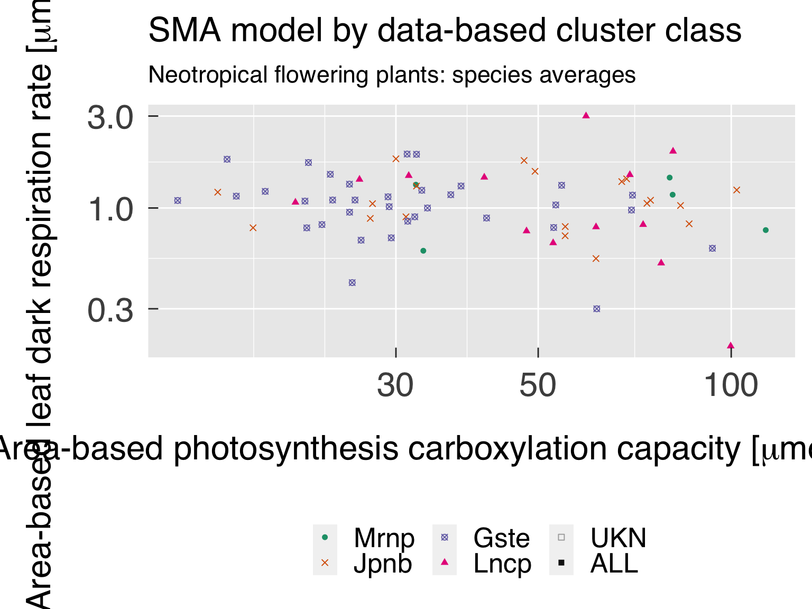 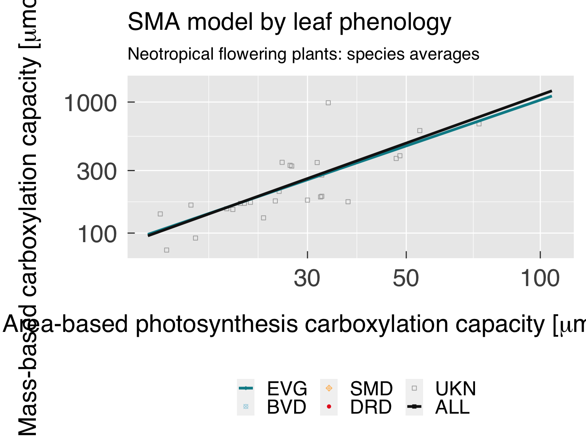
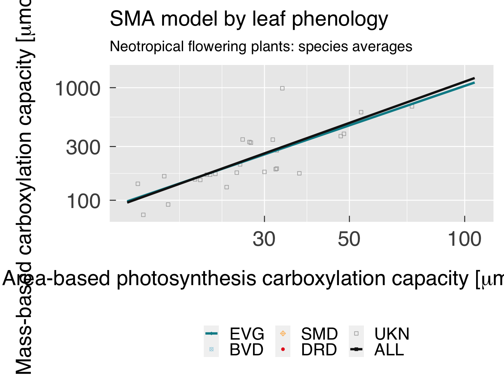
Plot global trait distribution
Here we plot the global trait distribution as a separate set, which
can be useful for some analyses.
# Select reference data set for trade-off analysis
DataTRY = switch( EXPR = fit_taxon
, Individual = TidyTRY
, Species = SpeciesTRY
, Genus = GenusTRY
, stop("Invalid settings for variable \"fit_taxon\".")
)#end switch
# Set path for this group of plots.
global_trdist_path = file.path(trdist_path,"Global")
# Select distribution statistics for this trait type
InfoNow = InfoDistr %>%
filter(TraitClass %in% c("All")) %>%
select(! c(Class,TraitClass)) %>%
mutate(Label = NA_character_)
# Find out how many distribution plots we will make
xPlotDistr = which(try_trait$SMA & (try_trait$Name %in% InfoDistr$x) & plot_global_distrib)
CntDistr = length(xPlotDistr)
# Initialise list with plots
gg_Distr = list()
# Loop through the SMA variables
for (x in sequence(CntDistr)){
# Load settings for the y axis.
xIndex = xPlotDistr[x]
xTrait = try_trait$TraitID[xIndex]
xName = try_trait$Name [xIndex]
xLower = paste0(yName,"_Lower")
xUpper = paste0(yName,"_Upper")
xDesc = try_trait$Desc [xIndex]
xUnit = try_trait$Unit [xIndex]
xTrans = try_trait$Trans [xIndex]
xTPlot = switch( EXPR = xTrans, log = "log10", neglog="neglog10",xTrans)
xInfo = which(InfoNow$x %in% xName)
xDistr = InfoNow$Distrib[xInfo]
xFirst = InfoNow$First [xInfo]
xSecond = InfoNow$Second [xInfo]
xThird = InfoNow$Third [xInfo]
xColLine = RColorBrewer::brewer.pal(n=2L,name="Paired")[2L]
xColPoint = RColorBrewer::brewer.pal(n=2L,name="Paired")[1L]
# Select valid data for the x axis
xSel = switch( EXPR = xTrans
, identity = is.finite(DataTRY[[xName]])
, log = DataTRY[[xName]] %gt% 0.
, neglog = DataTRY[[xName]] %lt% 0.
, sqrt = DataTRY[[xName]] %ge% 0.
, cbrt = is.finite(DataTRY[[xName]])
, stop(paste0(" Invalid transformation for trait ",xName," (TraitID = ",xTrait,")."))
)#end switch
# Fit density according to the distribution.
xFun = switch( xDistr
, "uniform" = dunif
, "normal" = dnorm
, "logistic" = dlogis
, "skew-normal" = sn::dsn
, "log-normal" = dlnorm
, "neglog-normal" = dnlnorm
, "weibull" = dweibull
, "gamma" = dgamma
, NA_character_
)#end switch
# Subset data and see if there are sufficient points for plotting the global distribution
DataPlot = DataTRY %>%
filter(xSel) %>%
select_at(vars(c(xName))) %>%
mutate( density = NA_real_)
CntDataPlot = nrow(DataPlot)
# Plot only the variables with meaningful data
PlotDistr = (! is.na(xInfo)) & (CntDataPlot %gt% n_fit_min)
if (PlotDistr){
cat0(" + Plot the global trait distribution for ",xDesc,".")
# Set path for this group of plots.
dummy = dir.create(path=global_trdist_path,recursive=TRUE,showWarnings=FALSE)
# Labels for title and sub-title
xTitle = paste0("Density function - ",xDesc)
xSubtitle = paste0("Fitted distribution: ",str_to_sentence(xDistr),".")
# Find limits for plots.
xLimit = range(DataPlot[[xName]],finite=TRUE)
DistrPlot = tibble( x = seq(from=xLimit[1L],to=xLimit[2L],length.out=n_predict)
, y = rep(NA_real_,times=n_predict)
, d = rep(NA_character_,times=n_predict)
)#end tibble
names(DistrPlot) = c(xName,"density","distr")
# Decide whether the distribution needs two or three parameters
if (xDistr %in% "skew-normal"){
DistrPlot$density = xFun(DistrPlot[[xName]],xFirst,xSecond,xThird)
DataPlot$density = xFun(DataPlot [[xName]],xFirst,xSecond,xThird)
}else if (! is.na(xDistr)){
DistrPlot$density = xFun(DistrPlot[[xName]],xFirst,xSecond)
DataPlot$density = xFun(DataPlot [[xName]],xFirst,xSecond)
}#end if (xDistr %in% "skew-normal")
# Prepare DataPlot to have random density locations below the curves
DataPlot = DataPlot %>%
mutate ( density = density * runif(n=CntDataPlot) )
# Find limits for density scale
yLimit = range(DistrPlot$density,finite=TRUE)
# Build the plot
gg_now = ggplot()
gg_now = gg_now + geom_rug(data=DataPlot,aes_string(x=xName,y="density"),colour=xColPoint,sides="b")
#gg_now = gg_now + geom_point(data=DataPlot,aes_string(x=xName,y="density"),size=1.5,colour="#AAAAAA")
gg_now = gg_now + geom_line(data=DistrPlot,aes_string(x=xName,y="density"),size=1.25,colour=xColLine,inherit.aes = FALSE)
gg_now = gg_now + labs( x = desc.unit(desc=xDesc,unit=untab[[xUnit]])
, y = desc.unit(desc="Density function",unit=i.untab[[xUnit]])
, title = xTitle
, subtitle = xSubtitle
)#end labs
gg_now = gg_now + theme_grey( base_size = gg_ptsz, base_family = "Helvetica",base_line_size = 0.5,base_rect_size =0.5)
gg_now = gg_now + theme( axis.text.x = element_text( size = gg_ptsz, margin = unit(rep(0.35,times=4),"cm"))
, axis.text.y = element_text( size = gg_ptsz, margin = unit(rep(0.35,times=4),"cm"))
, plot.title = element_text( size = gg_ptsz)
, plot.subtitle = element_text( size = 0.7*gg_ptsz)
, axis.ticks.length = unit(-0.25,"cm")
, legend.position = "bottom"
, legend.direction = "horizontal"
)#end theme
gg_now = gg_now + scale_x_continuous(trans=xTPlot,limits=xLimit)
gg_now = gg_now + scale_y_continuous(trans="identity",limits=yLimit)
# Save plot in every format requested.
for (d in sequence(ndevice)){
f_output = paste0("DistrPlot_",xName,"_Global_",base_suffix,".",gg_device[d])
dummy = ggsave( filename = f_output
, plot = gg_now
, device = gg_device[d]
, path = global_trdist_path
, width = gg_square
, height = gg_height
, units = gg_units
, dpi = gg_depth
)#end ggsave
}#end for (d in sequence(ndevice))
# Write plot settings to the list.
gg_Distr[[xName]] = gg_now
}else{
cat0(" + Skip plot for ",xDesc,": too few valid points.")
}#end if (PlotDistr)
}#end for (x in sequence(CntDistr))
# If sought, plot images on screen
cnt_gg_Distr = length(gg_Distr)
if (gg_screen && (cnt_gg_Distr %gt% 0L)){
gg_show = sort(sample.int(n=cnt_gg_Distr,size=min(cnt_gg_Distr,3L),replace=FALSE))
gg_Distr[gg_show]
}#end if (gg_screen && (cnt_gg_Distr %gt% 0L))
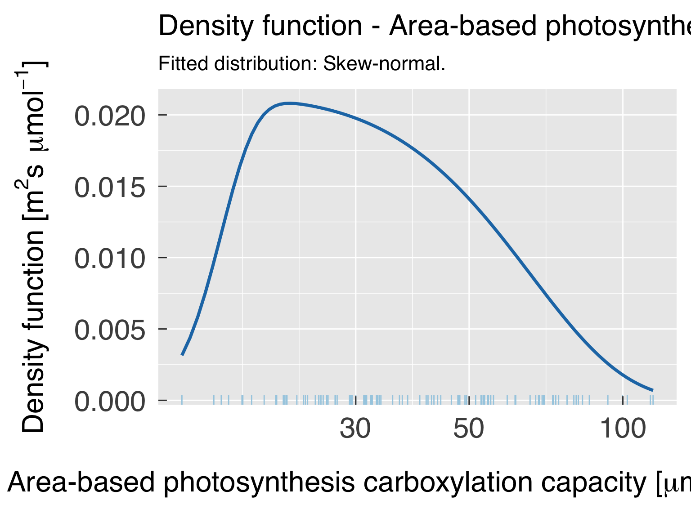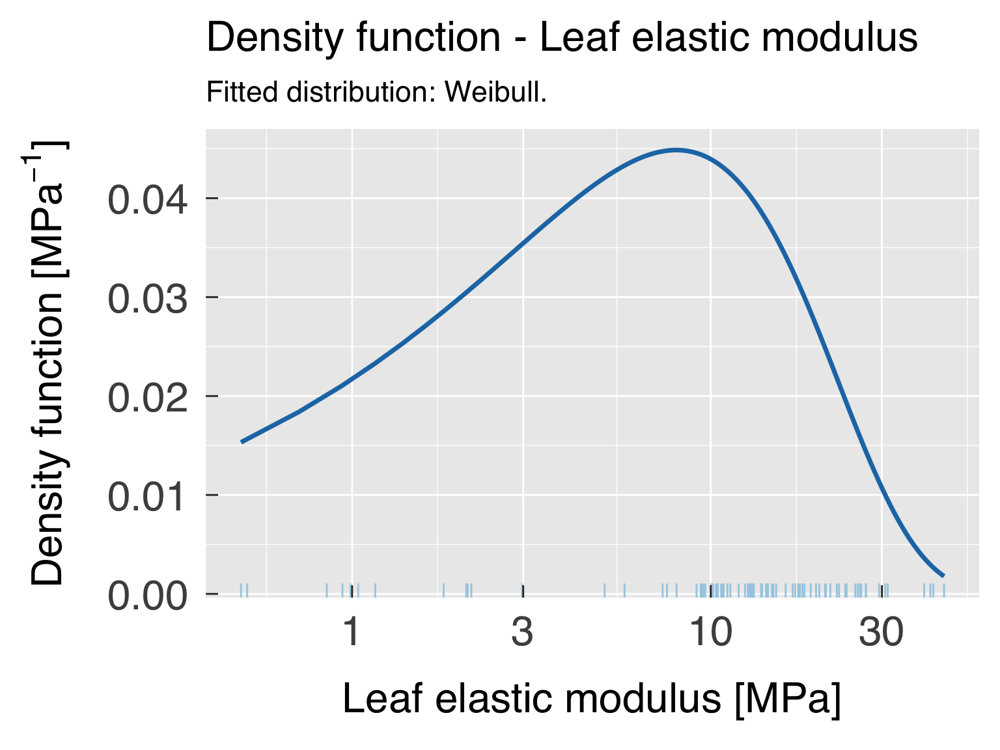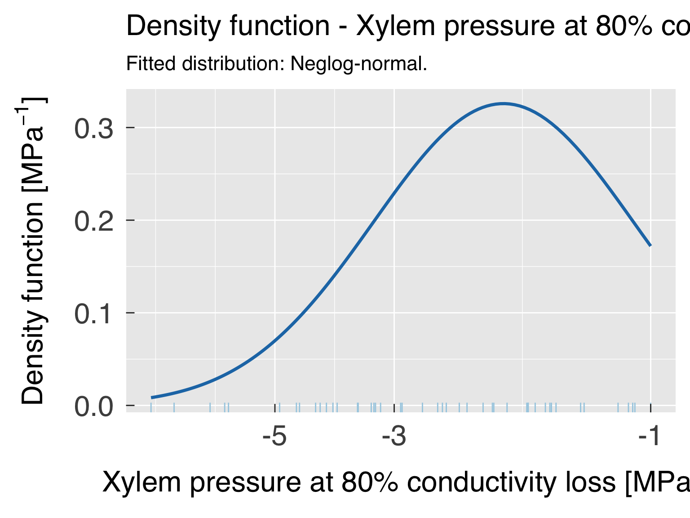
Plot trait density function by group
Here we plot the density functions of traits, separated by classes,
and along with the global distribution.
# Select reference data set for trade-off analysis
DataTRY = switch( EXPR = fit_taxon
, Individual = TidyTRY
, Species = SpeciesTRY
, Genus = GenusTRY
, stop("Invalid settings for variable \"fit_taxon\".")
)#end switch
# Find the number of sub-classes to test the model
CategDistr = CategExtra %>%
filter( ( (XYUse %in% "Colour") | (TraitID %in% 0L) | is.na(TraitID)) & (! duplicated(Class))) %>%
mutate( Label = paste0(Class," (Not fitted)") )
CntCategDistr = nrow(CategDistr)
# Find out how many distribution plots we will make
xPlotDistr = which(try_trait$SMA & (try_trait$Name %in% InfoDistr$x))
CntDistr = length(xPlotDistr)
# Initialise list with plots
gg_Distr = list()
CategSel = is.finite(CategDistr$TraitID) & plot_categ_distrib
CategTrait = sort(unique(CategDistr$TraitID[CategSel]))
for (ct in seq_along(CategTrait)){
# Load settings for the classes.
zTrait = CategTrait[ct]
if (zTrait %in% 0L){
zName = "Cluster"
zDesc = "Data-based cluster class"
}else{
z = match(zTrait,try_trait$TraitID)
zName = try_trait$Name [z]
zDesc = try_trait$Desc [z]
}#end if (zTrait %in% 0L)
zTitle = paste0("Trait distribution by ",tolower(zDesc))
# Set path for this group of plots.
categ_trdist_path = file.path(trdist_path,zName)
# Select categories for this trait type.
CategDistr = CategExtra %>%
filter( (TraitID %in% zTrait) | is.na(TraitID)) %>%
filter((! duplicated(Class))) %>%
mutate(Label = ifelse(test=Class %in% "UKN",yes="UKN",no=NA_character_))
CntCategDistr = nrow(CategDistr)
# Select distribution statistics for this trait type
InfoNow = InfoDistr %>%
filter(TraitClass %in% c("All",zName)) %>%
select(! TraitClass) %>%
rename_at( vars(c("Class")), ~ c(zName)) %>%
mutate(Label = NA_character_)
# Loop through the SMA variables
for (x in sequence(CntDistr)){
# Load settings for the y axis.
xIndex = xPlotDistr[x]
xTrait = try_trait$TraitID[xIndex]
xName = try_trait$Name [xIndex]
xLower = paste0(xName,"_Lower")
xUpper = paste0(xName,"_Upper")
xDesc = try_trait$Desc [xIndex]
xUnit = try_trait$Unit [xIndex]
xTrans = try_trait$Trans [xIndex]
xTPlot = switch( EXPR = xTrans, log = "log10", neglog="neglog10",xTrans)
# Select valid data for the x axis
xSel = switch( EXPR = xTrans
, identity = is.finite(DataTRY[[xName]])
, log = DataTRY[[xName]] %gt% 0.
, neglog = DataTRY[[xName]] %lt% 0.
, sqrt = DataTRY[[xName]] %ge% 0.
, cbrt = is.finite(DataTRY[[xName]])
, stop(paste0(" Invalid transformation for trait ",xName," (TraitID = ",xTrait,")."))
)#end switch
# Subset data
DataPlot = DataTRY %>%
filter(xSel) %>%
select_at(vars(c(xName,zName))) %>%
mutate( across(c(zName), ~ifelse(.x %in% CategDistr$Class,.x,"UKN"))
, across(c(zName), ~factor(.x,levels=CategDistr$Class))
, density = NA_real_ )
# Append dummy data with category ALL so legends can be merged.
DataDummy = DataPlot[rep(1L,times=CntCategDistr),,drop=FALSE] %>%
mutate( across(c(xName,"density"), ~ c(NA_real_))
, across(c(zName), ~ factor(CategDistr$Class,levels=CategDistr$Class) ) )
DataPlot = rbind(DataPlot,DataDummy)
CntDataPlot = nrow(DataPlot)
# Plot only the variables with meaningful data
PlotDistr = CntDataPlot %gt% n_fit_min
if (PlotDistr){
cat0(" + Plot the trait distribution for ",xDesc," by ",zName,".")
# Set path for this group of plots.
dummy = dir.create(path=categ_trdist_path,recursive=TRUE,showWarnings=FALSE)
# Find limits for plots.
xLimit = range(DataPlot[[xName]],finite=TRUE)
DistrPlot = tibble( x = rep(seq(from=xLimit[1L],to=xLimit[2L],length.out=n_predict),times=CntCategDistr)
, y = rep(NA_real_,times=CntCategDistr*n_predict)
, z = rep(CategDistr$Class,each=n_predict)
, d = rep(NA_character_,times=CntCategDistr*n_predict)
)#end tibble
names(DistrPlot) = c(xName,"density",zName,"distr")
# Turn classes into levels, so legends can be merged.
DistrPlot = DistrPlot %>%
mutate( across(c(zName), ~ factor(.x,levels = CategDistr$Class)) )
# Generate consistent density functions
zLoop = which(CategDistr$Class %in% unique(InfoNow[[zName]]))
for (z in zLoop){
# Identfy distribution
zValue = CategDistr$Class[z]
zInfo = which((InfoNow[[zName]] %in% zValue) & (InfoNow$x %in% xName))
zDistr = InfoNow$Distrib[zInfo]
zFirst = InfoNow$First [zInfo]
zSecond = InfoNow$Second [zInfo]
zThird = InfoNow$Third [zInfo]
if (zValue %in% "ALL"){
zSel = DistrPlot[[zName]] %in% zValue
rSel = DataPlot [[zName]] %in% "UKN"
}else{
zSel = DistrPlot[[zName]] %in% zValue
rSel = DataPlot [[zName]] %in% zValue
}#end if (zValue %in% "ALL")
# Set the distribution
DistrPlot$distr[zSel] = zDistr
# Update label to include fitted distribution
if (is.na(zDistr)){
CategDistr$Label[z] = paste0(CategDistr$Class[z]," (Not fitted)")
}else{
CategDistr$Label[z] = paste0(CategDistr$Class[z]," (",str_to_sentence(zDistr),")")
}#end if (is.na(zDistr))
# Fit density according to the distribution.
zFun = switch( zDistr
, "uniform" = dunif
, "normal" = dnorm
, "logistic" = dlogis
, "skew-normal" = sn::dsn
, "log-normal" = dlnorm
, "neglog-normal" = dnlnorm
, "weibull" = dweibull
, "gamma" = dgamma
, NA_character_
)#end switch
# Decide whether the distribution needs two or three parameters
if (zDistr %in% "skew-normal"){
if (any(zSel)) DistrPlot$density[zSel] = zFun(DistrPlot[[xName]][zSel],zFirst,zSecond,zThird)
if (any(rSel)) DataPlot$density [rSel] = zFun(DataPlot [[xName]][rSel],zFirst,zSecond,zThird)
}else if (! is.na(zDistr)){
if (any(zSel)) DistrPlot$density[zSel] = zFun(DistrPlot[[xName]][zSel],zFirst,zSecond)
if (any(rSel)) DataPlot$density [rSel] = zFun(DataPlot [[xName]][rSel],zFirst,zSecond)
}#end if (zDistr %in% "skew-normal")
}#end for (z in zLoop)
# Prepare DataPlot to have random density locations below the curves
DataPlot = DataPlot %>%
mutate ( density = density * runif(n=CntDataPlot) )
# Find limits for density scale
yLimit = range(DistrPlot$density,finite=TRUE)
# Set categories for colours, lines and symbols
colClasses = CategDistr$Colour
names(colClasses) = CategDistr$Class
pchClasses = CategDistr$Symbol
names(pchClasses) = CategDistr$Class
ltyClasses = rep("solid",times=CntCategDistr)
names(ltyClasses) = CategDistr$Class
labClasses = CategDistr$Label
names(labClasses) = CategDistr$Class
# Build the plot
gg_now = ggplot()
gg_now = gg_now + geom_point(data=DataPlot,aes_string(x=xName,y="density",colour=zName,shape=zName),size=1.5)
gg_now = gg_now + geom_line(data=DistrPlot,aes_string(x=xName,y="density",colour=zName),size=1.25,inherit.aes = FALSE)
gg_now = gg_now + scale_colour_manual (values=colClasses,breaks=CategDistr$Class,labels=labClasses)
gg_now = gg_now + scale_shape_manual (values=pchClasses,breaks=CategDistr$Class,labels=labClasses)
gg_now = gg_now + scale_linetype_manual(values=ltyClasses,breaks=CategDistr$Class,labels=labClasses)
gg_now = gg_now + labs( x = desc.unit(desc=xDesc,unit=untab[[xUnit]])
, y = desc.unit(desc="Density function",unit=i.untab[[xUnit]])
, colour = element_blank()
, fill = element_blank()
, shape = element_blank()
, title = zTitle
, subtitle = LabelSubtitle
)#end labs
gg_now = gg_now + theme_grey( base_size = gg_ptsz, base_family = "Helvetica",base_line_size = 0.5,base_rect_size =0.5)
gg_now = gg_now + theme( axis.text.x = element_text( size = gg_ptsz, margin = unit(rep(0.35,times=4),"cm"))
, axis.text.y = element_text( size = gg_ptsz, margin = unit(rep(0.35,times=4),"cm"))
, plot.title = element_text( size = gg_ptsz)
, plot.subtitle = element_text( size = 0.7*gg_ptsz)
, axis.ticks.length = unit(-0.25,"cm")
, legend.position = "bottom"
, legend.direction = "horizontal"
)#end theme
gg_now = gg_now + scale_x_continuous(trans=xTPlot,limits=xLimit)
gg_now = gg_now + scale_y_continuous(trans="identity",limits=yLimit)
gg_now = gg_now + guides(colour = guide_legend(nrow=2,byrow=TRUE))
gg_now = gg_now + guides(shape = guide_legend(nrow=2,byrow=TRUE))
# Save plot in every format requested.
for (d in sequence(ndevice)){
f_output = paste0("DistrPlot_",xName,"_by-",zName,"_",base_suffix,".",gg_device[d])
dummy = ggsave( filename = f_output
, plot = gg_now
, device = gg_device[d]
, path = categ_trdist_path
, width = gg_width
, height = gg_height
, units = gg_units
, dpi = gg_depth
)#end ggsave
}#end for (o in sequence(nout))
# Write plot settings to the list.
xzName = paste0(xName,"_",zName)
gg_Distr[[xzName]] = gg_now
}else{
cat0(" + Skip plot for ",xDesc," by ",zDesc,": too few valid points.")
}#end if (PlotSMA)
}#end for (y in yloop)
}#end for (ct in seq_along(CategTrait)){
# If sought, plot images on screen
cnt_gg_Distr = length(gg_Distr)
if (gg_screen && (cnt_gg_Distr %gt% 0L)){
gg_show = sort(sample.int(n=cnt_gg_Distr,size=min(cnt_gg_Distr,3L),replace=FALSE))
gg_Distr[gg_show]
}#end if (gg_screen && (length(gg_Photo) %gt% 0L))
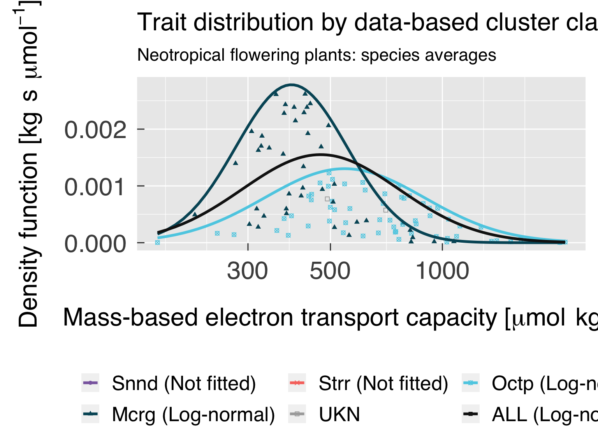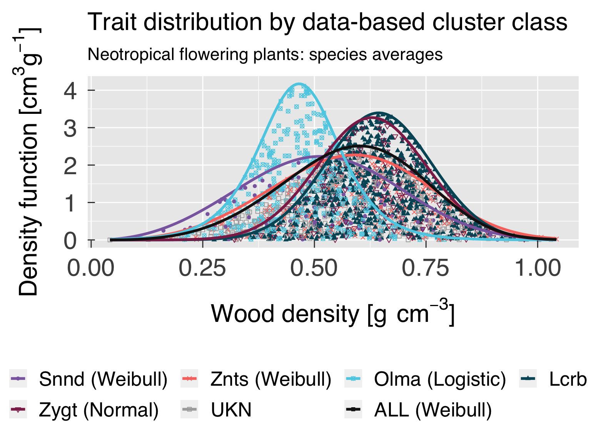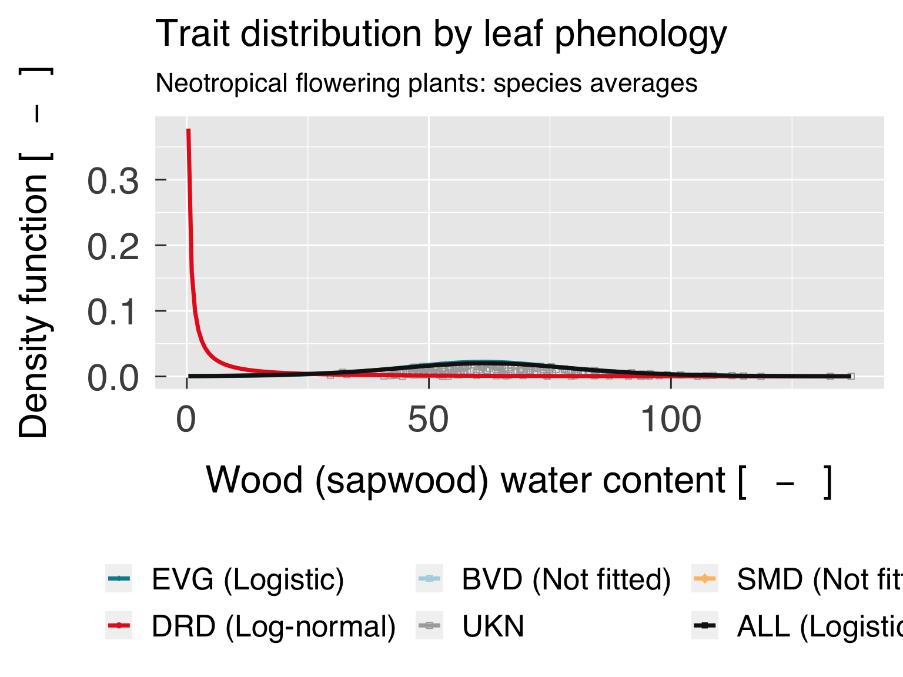
Plot trait density function by group using ridge (Joy Division)
plots
Here we plot the density functions of traits, separated by classes,
and along with the global distribution. We do not use the
ggridges package because we want the fitted distributions
to be plotted instead of the non-parametric distributions.
# Select reference data set for trade-off analysis
DataTRY = switch( EXPR = fit_taxon
, Individual = TidyTRY
, Species = SpeciesTRY
, Genus = GenusTRY
, stop("Invalid settings for variable \"fit_taxon\".")
)#end switch
# Find out how many distribution plots we will make
xPlotDistr = which(try_trait$SMA & (try_trait$Name %in% InfoDistr$x))
CntDistr = length(xPlotDistr)
# Initialise list with plots
gg_Ridge = list()
CategInput = CategExtra %>%
filter( ( (XYUse %in% "Colour") | (TraitID %in% 0L) | is.na(TraitID) ) & (! duplicated(Class)) & plot_categ_ridge )
CategTrait = sort(unique(CategInput$TraitID[CategSel]))
for (ct in seq_along(CategTrait)){
# Load settings for the classes.
zTrait = CategTrait[ct]
if (zTrait %in% 0L){
zName = "Cluster"
zDesc = "Data-based cluster class"
}else{
z = match(zTrait,try_trait$TraitID)
zName = try_trait$Name [z]
zDesc = try_trait$Desc [z]
}#end if (zTrait %in% 0L)
zTitle = paste0("Trait distribution by ",tolower(zDesc))
# Set path for this group of plots.
categ_trridge_path = file.path(trridge_path,zName)
# Select categories for this trait type.
CategDistr = CategInput %>%
filter( (TraitID %in% zTrait) | (Class %in% "ALL") ) %>%
filter((! duplicated(Class))) %>%
mutate(Label = NA_character_)
CntCategDistr = nrow(CategDistr)
# Select distribution statistics for this trait type
InfoNow = InfoDistr %>%
filter(TraitClass %in% c("All",zName)) %>%
select(! TraitClass) %>%
rename_at( vars(c("Class")), ~ c(zName)) %>%
mutate(Label = NA_character_)
# Loop through the SMA variables
for (x in sequence(CntDistr)){
# Load settings for the y axis.
xIndex = xPlotDistr[x]
xTrait = try_trait$TraitID[xIndex]
xName = try_trait$Name [xIndex]
xLower = paste0(xName,"_Lower")
xUpper = paste0(xName,"_Upper")
xDesc = try_trait$Desc [xIndex]
xUnit = try_trait$Unit [xIndex]
xTrans = try_trait$Trans [xIndex]
xTPlot = switch( EXPR = xTrans, log = "log10", neglog="neglog10",xTrans)
# Select valid data for the x axis
xSel = switch( EXPR = xTrans
, identity = is.finite(DataTRY[[xName]])
, log = DataTRY[[xName]] %gt% 0.
, neglog = DataTRY[[xName]] %lt% 0.
, sqrt = DataTRY[[xName]] %ge% 0.
, cbrt = is.finite(DataTRY[[xName]])
, stop(paste0(" Invalid transformation for trait ",xName," (TraitID = ",xTrait,")."))
)#end switch
# Subset data
DataPlot = DataTRY %>%
filter(xSel) %>%
select_at(vars(c(xName,zName))) %>%
mutate( across(c(zName), ~ifelse(.x %in% CategDistr$Class,.x,"ALL"))
, across(c(zName), ~factor(.x,levels=CategDistr$Class))
, offset = NA_real_
, density = NA_real_ )
# Append dummy data with category ALL so legends can be merged.
DataDummy = DataPlot[rep(1L,times=CntCategDistr),,drop=FALSE] %>%
mutate( across(c(xName,"offset","density"), ~ c(NA_real_))
, across(c(zName), ~ factor(CategDistr$Class,levels=CategDistr$Class) ) )
DataPlot = rbind(DataPlot,DataDummy)
CntDataPlot = nrow(DataPlot)
# Plot only the variables with meaningful data
PlotDistr = CntDataPlot %gt% n_fit_min
if (PlotDistr){
cat0(" + Plot the trait distribution for ",xDesc," by ",zName,".")
# Set path for this group of plots.
dummy = dir.create(path=categ_trridge_path,recursive=TRUE,showWarnings=FALSE)
# Find limits for plots.
xLimit = range(DataPlot[[xName]],finite=TRUE)
DistrPlot = tibble( x = rep(seq(from=xLimit[1L],to=xLimit[2L],length.out=n_predict),times=CntCategDistr)
, l = rep(NA_real_,times=CntCategDistr*n_predict)
, u = rep(NA_real_,times=CntCategDistr*n_predict)
, z = rep(CategDistr$Class,each=n_predict)
, d = rep(NA_character_,times=CntCategDistr*n_predict)
)#end tibble
names(DistrPlot) = c(xName,"offset","density",zName,"distr")
# Turn classes into levels, so legends can be merged.
DistrPlot = DistrPlot %>%
mutate( across(c(zName), ~ factor(.x,levels = CategDistr$Class)) )
# Generate consistent density functions
zLoop = which(CategDistr$Class %in% unique(InfoNow[[zName]]))
onow = -1L
for (z in zLoop){
# Update offset
onow = onow + 1L
# Identfy distribution
zValue = CategDistr$Class[z]
zInfo = which((InfoNow[[zName]] %in% zValue) & (InfoNow$x %in% xName))
zDistr = InfoNow$Distrib[zInfo]
zFirst = InfoNow$First [zInfo]
zSecond = InfoNow$Second [zInfo]
zThird = InfoNow$Third [zInfo]
if (zValue %in% "ALL"){
zSel = DistrPlot[[zName]] %in% zValue
rSel = DataPlot [[zName]] %in% "UKN"
}else{
zSel = DistrPlot[[zName]] %in% zValue
rSel = DataPlot [[zName]] %in% zValue
}#end if (zValue %in% "ALL")
# Set the distribution
DistrPlot$distr[zSel] = zDistr
# Update label to include fitted distribution
if (is.na(zDistr)){
CategDistr$Label[z] = paste0(CategDistr$Class[z]," (Not fitted)")
}else{
CategDistr$Label[z] = paste0(CategDistr$Class[z]," (",str_to_sentence(zDistr),")")
}#end if (is.na(zDistr))
# Fit density according to the distribution.
zFun = switch( zDistr
, "uniform" = dunif
, "normal" = dnorm
, "logistic" = dlogis
, "skew-normal" = sn::dsn
, "log-normal" = dlnorm
, "neglog-normal" = dnlnorm
, "weibull" = dweibull
, "gamma" = dgamma
, NA_character_
)#end switch
# Append offsets
if (any(zSel)) DistrPlot$offset[zSel] = onow
if (any(rSel)) DataPlot$offset [rSel] = onow
# Decide whether the distribution needs two or three parameters
if (zDistr %in% "skew-normal"){
if (any(zSel)) DistrPlot$density[zSel] = zFun(DistrPlot[[xName]][zSel],zFirst,zSecond,zThird)
if (any(rSel)) DataPlot$density [rSel] = zFun(DataPlot [[xName]][rSel],zFirst,zSecond,zThird)
}else if (! is.na(zDistr)){
if (any(zSel)) DistrPlot$density [zSel] = zFun(DistrPlot[[xName]][zSel],zFirst,zSecond)
if (any(rSel)) DataPlot$density [rSel] = zFun(DataPlot [[xName]][rSel],zFirst,zSecond)
}#end if (zDistr %in% "skew-normal")
}#end for (z in zLoop)
# Find scaling factor for all densities, allowing a bit of overlap between the curves
DensityMax = 0.6 * max(DistrPlot$density,na.rm=TRUE)
DistrPlot = DistrPlot %>%
mutate( ridge = offset + density / DensityMax)
DataPlot = DataPlot %>%
mutate( ridge = offset + density / DensityMax * runif(n=CntDataPlot))
# Find limits for density scale
yLimit = range(c(DistrPlot$offset,DistrPlot$ridge),finite=TRUE)
yAt = seq_along(zLoop) - 1L
yLabels = CategDistr$Label[zLoop]
# Set categories for colours, lines and symbols
colClasses = CategDistr$Colour
names(colClasses) = CategDistr$Class
bgClasses = alpha(colClasses,alpha=0.4)
names(bgClasses) = CategDistr$Class
pchClasses = CategDistr$Symbol
names(pchClasses) = CategDistr$Class
ltyClasses = rep("solid",times=CntCategDistr)
names(ltyClasses) = CategDistr$Class
labClasses = CategDistr$Label
names(labClasses) = CategDistr$Class
# Build the plot
gg_now = ggplot()
gg_now = gg_now + geom_ribbon( data = DistrPlot
, mapping = aes_string(x=xName,ymin="offset",ymax="ridge",colour=zName,fill=zName)
, size = 1.25
, inherit.aes = FALSE
, show.legend = FALSE
)#end geom_ribbon
gg_now = gg_now + geom_point( data = DataPlot
, mapping = aes_string(x=xName,y="ridge",colour=zName,shape=zName)
, size = 1.5
, show.legend = FALSE
)#end geom_point
gg_now = gg_now + scale_colour_manual (values=colClasses,breaks=CategDistr$Class,labels=labClasses)
gg_now = gg_now + scale_fill_manual (values=bgClasses ,breaks=CategDistr$Class,labels=labClasses)
gg_now = gg_now + scale_shape_manual (values=pchClasses,breaks=CategDistr$Class,labels=labClasses)
gg_now = gg_now + scale_linetype_manual(values=ltyClasses,breaks=CategDistr$Class,labels=labClasses)
gg_now = gg_now + labs( x = desc.unit(desc=xDesc,unit=untab[[xUnit]])
, y = element_blank()
, colour = element_blank()
, fill = element_blank()
, shape = element_blank()
, title = zTitle
, subtitle = LabelSubtitle
)#end labs
gg_now = gg_now + theme_grey( base_size = gg_ptsz, base_family = "Helvetica",base_line_size = 0.5,base_rect_size =0.5)
gg_now = gg_now + theme( axis.text.x = element_text( size = gg_ptsz, margin = unit(rep(0.35,times=4),"cm"))
, axis.text.y = element_text( size = gg_ptsz, margin = unit(rep(0.35,times=4),"cm"))
, plot.title = element_text( size = gg_ptsz)
, plot.subtitle = element_text( size = 0.7*gg_ptsz)
, axis.ticks.length = unit(-0.25,"cm")
, legend.position = "bottom"
, legend.direction = "horizontal"
)#end theme
gg_now = gg_now + scale_x_continuous(trans=xTPlot,limits=xLimit)
gg_now = gg_now + scale_y_continuous(trans="identity",limits=yLimit,breaks=yAt,labels=yLabels)
gg_now = gg_now + guides(colour = guide_legend(nrow=2,byrow=TRUE))
gg_now = gg_now + guides(shape = guide_legend(nrow=2,byrow=TRUE))
# Save plot in every format requested.
for (d in sequence(ndevice)){
f_output = paste0("RidgePlot_",xName,"_by-",zName,"_",base_suffix,".",gg_device[d])
dummy = ggsave( filename = f_output
, plot = gg_now
, device = gg_device[d]
, path = categ_trridge_path
, width = gg_width
, height = gg_height
, units = gg_units
, dpi = gg_depth
)#end ggsave
}#end for (o in sequence(nout))
# Write plot settings to the list.
xzName = paste0(xName,"_",zName)
gg_Ridge[[xzName]] = gg_now
}else{
cat0(" + Skip plot for ",xDesc," by ",zDesc,": too few valid points.")
}#end if (PlotSMA)
}#end for (y in yloop)
}#end for (ct in seq_along(CategTrait)){
# If sought, plot images on screen
cnt_gg_Ridge = length(gg_Ridge)
if (gg_screen && (cnt_gg_Ridge %gt% 0L)){
gg_show = sort(sample.int(n=cnt_gg_Ridge,size=min(cnt_gg_Ridge,3L),replace=FALSE))
gg_Ridge[gg_show]
}#end if (gg_screen && (length(gg_Ridge) %gt% 0L))
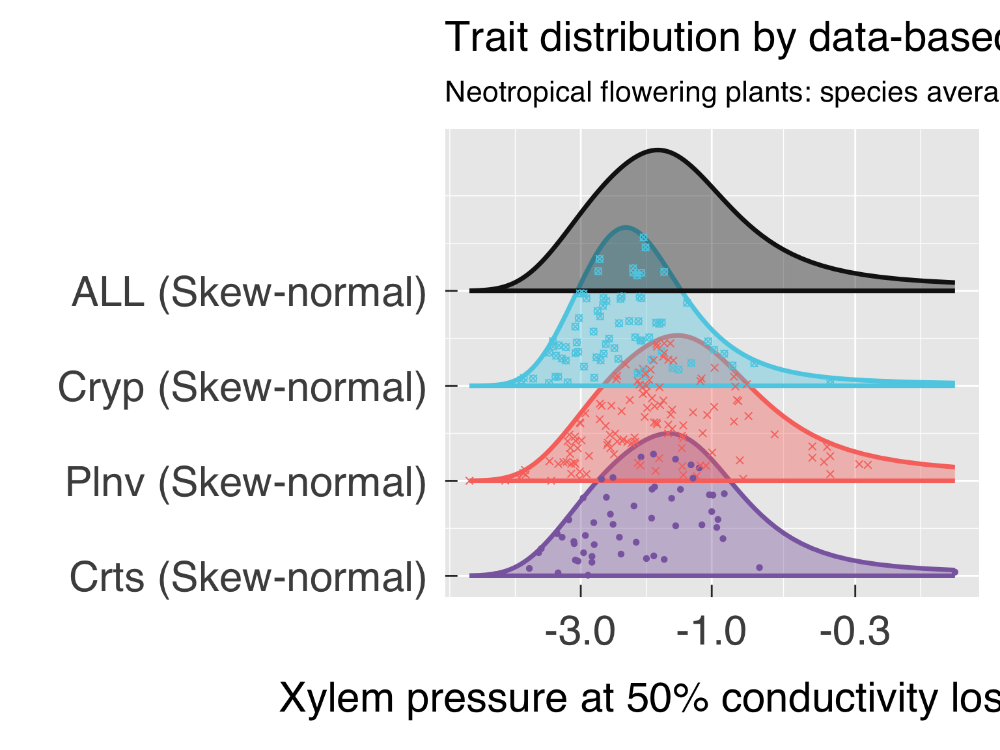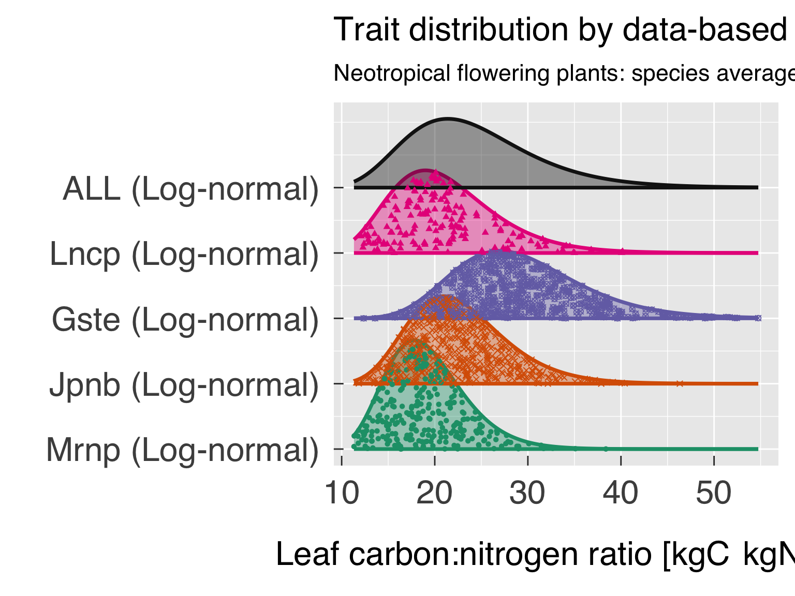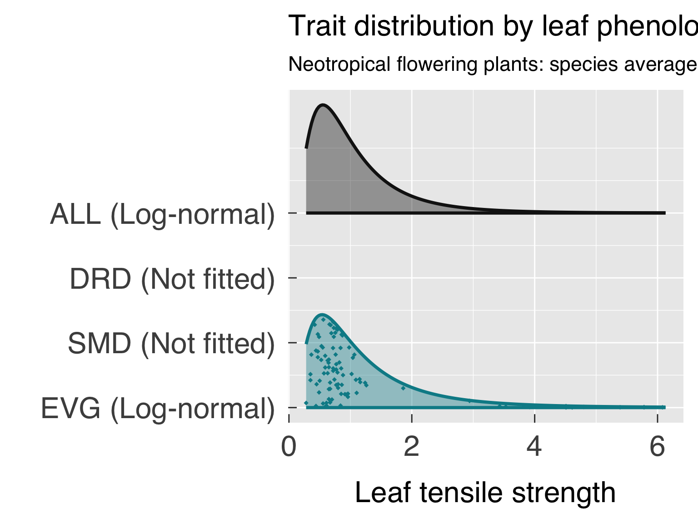